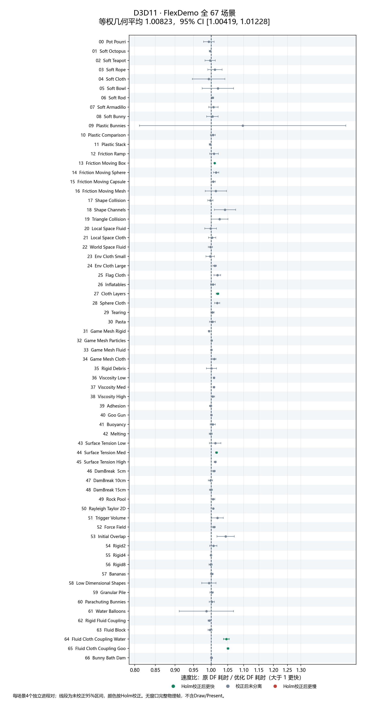
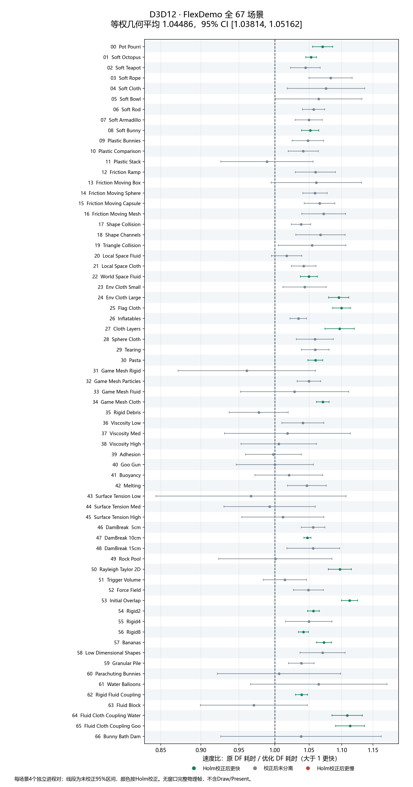

生成时间：2026-10-11T08:57:18+08:00。本报告只在显式终验审阅通过后生成。
D11：67场景等权几何平均速度比为 1.008230，95%区间 [1.004195, 1.012282]。速度比定义为原DF耗时/优化DF耗时，大于1表示优化版更快。
D12：67场景等权几何平均速度比为 1.044859，95%区间 [1.038145, 1.051616]。速度比定义为原DF耗时/优化DF耗时，大于1表示优化版更快。
最终保留9类优化、拒绝7类实测候选；115个alpha版本、391条历史优化/修复思路已逐项闭环。没有把OF中依赖降频、不同归约或引擎渲染层的收益直接套到DF。
最终v2恢复全部原始浮点shader程序，只新增5个整数辅助入口。主粒子输入契约、ID、相位、逆质量及所有已检查帧的有限值门通过；未启用任何数值近似例外。
D3D11全67场景速度约提升0.82%，D3D12约4.49%。这是本机无窗口完整物理帧的等场景权重结果；没有声称每个场景都更快。
环境：Windows 10 Education 19045，Core i5-13600K，RTX 5080 16GB，驱动581.15，64GB内存；MSVC14.44.35207、SDK10.0.26100。电源策略保持原状。所有GPU任务串行，使用无窗口进程及SystemRequired，不依赖桌面、键鼠或屏幕保持点亮。原始环境记录
最终v2保留原84个shader容器，未启用任何修改后的浮点shader。新增5个程序均为整数辅助程序，单独登记；不把它们称为NVIDIA原厂高级源码。保持原浮点公式、约束次数、子步、迭代、公开数据和回调语义，未使用数值近似例外。邻居谓词重排在v1试验后被保守撤回，原数据与源码保留。
| 编号/历史版本 | 改动 | 最终决定 | 依据/边界 | 独立实验构建 |
|---|---|---|---|---|
| A001-01 / alpha0.1 | 受限的空三角形派发省略，保留原计时标签及结构约束路径 | 纳入正式版 | 保留受限版本：只在没有弹簧、刚体、充气体、动态三角形和水花容量等敏感路径时省略已证明没有输出的空三角形派发。原公开计时标签和空计时仍保留；早期无条件方案因诊断契约及波动问题撤回。 | a01-empty-triangle-v3 |
| A002-01 / alpha0.2 | D3D12 40个描述符复制合为一次等价批量复制 | 纳入正式版 | 与A002-02作为组合保留。原32个SRV和8个UAV描述符内容不变，只将40次单项复制合为一次范围复制。单项没有可靠独立收益，不能拆分归功；组合在早期20场景D3D12试验约1.29%改善。 | a02-descriptor-batch-v1 |
| A002-02 / alpha0.2 | D3D12按原顺序批量提交资源与UAV屏障 | 纳入正式版 | 保留每一条转换/UAV屏障及其原始顺序，按数组一次提交；复制、清零和间接派发等其他路径保持原逻辑。与描述符合批联合验证，不删除GPU依赖。 | a02-barrier-batch-v1 |
| A003-01 / alpha0.3 | GPU计算最大实际弹簧端点，裁剪被证明没有输出的尾部线程 | 纳入正式版 | 保留。读取GPU排序结果中的最大真实弹簧端点，生成间接派发范围；绝不按activeCount裁剪稀疏高ID。仅大容量且至少一半余量的solver启用，条件变化回退。原弹簧浮点内核不变，专项覆盖高ID、替换/清空及容量切换；早期两个耦合目标场景完整帧改善约3.1%/3.8%。 | a03-spring-extent-v1 |
| A003-02 / alpha0.3 | 纯平面碰撞派生shader | 不纳入 | 不保留。原070纯平面派生程序通过144组直接差分及API测试，但扩大到8对目标场景后没有可靠完整帧收益，D3D11还出现局部回退。 | a03-planes-v1 |
| A006-01 / alpha0.6 | shader名称异构查找与固定名称，消除临时字符串 | 纳入正式版 | 保留。异构字符串查找和固定名称避免临时字符串分配，不改变键、选择顺序或vendor判断。D3D11阶段CPU周期有支持证据；D3D12独立名称优化的修正后区间跨1，不宣称其单项在D3D12必然提速。 | a06-shader-names-v1 |
| A006-02 / alpha0.6 | D3D12保活对象集合改用哈希查找，保持释放与fence顺序 | 纳入正式版 | 保留。D3D12保活对象的查重集合改为哈希集合，原vector的强引用、释放顺序和fence规则不变。独立CPU周期归因支持降低查重开销，不能把线程周期直接当指令数或秒数。 | a06-retained-set-v1 |
| A006-03 / alpha0.6 | IPO/LTCG全程序优化 | 不纳入 | 不保留。/GL、LTCG、Gy/Gw方案没有可靠完整帧或整帧CPU周期收益；仍保留原精确浮点编译策略。 | a06-ipo-v1 |
| A006-04 / alpha0.6 | 无回调求解域内复用D3D11绑定，保留全部UAV屏障边界 | 纳入正式版 | 保留。仅无回调的内部求解scope复用已证明有效的D3D11绑定状态；首轮完整建立SRV空状态，所有8个UAV绑定/解绑保持原样，常量映射/修改、ClearState和上下文切换均失效缓存。诊断版本逐派发核对真实native状态，生产版本关闭诊断。 | a06-bindings-v1 |
| A021-01 / alpha2.1 | 合并相邻的重复子步常量上传 | 不纳入 | 不保留。相邻重复子步常量上传合并通过正确性检查，但两API的20场景完整帧区间均不支持收益，点估计略慢。 | a21-substep-constants-v1 |
| A024-01 / alpha2.4 | 弹簧线程组512改256、保留八路归约 | 不纳入 | 不保留。512改256线程保持原八路弹簧归约且直接输出一致，但两API九场景完整帧点估计略慢、区间跨1，没有理由增加派生浮点程序。 | a24-spring-group-v1 |
| A037-01 / alpha3.7 | 受限的当前距离优先邻居过滤，保留邻居顺序及截断 | 不纳入 | 最终撤回。450组直接邻居差分通过，部分刚体负载有收益，但D3D11目标场景有可重复小幅退化。v1审阅时尚未解释的Soft Rope稀有尾差促使采取保守回退；后来32次原始/无改动对照也复现了同量级尾部，因此不把它断言为该算法错误。考虑边际收益和已确认局部退化，不恢复该改动，v2只使用原058。 | a37-distance-v2 |
| A037-02 / alpha3.7 | 满邻居行提前返回 | 不纳入 | 不保留。满行提前返回保持DF有界计数语义并通过450组直接差分，但D3D12多个场景变慢。profile中的CollideParticles耗时约增为2.6～3.3倍；控制流/收敛或驱动编译是可能因素，未采硬件stall/占用率计数，不把推测当定论。 | a37-fullrow-v1 |
| A039-01 / alpha3.9 | 删除原shader完全不读取的HalfSpringIndices分配及绑定 | 纳入正式版 | 保留内存优化。原032/075根本不声明或读取HalfSpringIndices，删除该分配及绑定。逻辑存储减少4×保留半弹簧容量字节，未声称实测驱动峰值显存同比下降；独立完整帧区间跨1，不给它虚构FPS收益。 | a39-dead-stream-v1 |
| A042-01 / alpha4.2 | 精确12字节弹簧元数据打包 | 不纳入 | 不保留。12字节精确元数据打包保留浮点指令和归约顺序，高连接度及混合正负刚度输出逐字节通过；相对死流移除底座，D3D11仅约0.33%边际改善，D3D12约慢0.50%，不值得引入三份派生程序及新布局。8字节palette路线没有冒充为已实测。 | a42-packed-springs-v1 |
| A082-01 / alpha8.2 | 前16位采用两次稳定8位排序，剩余位保留原4位排序 | 纳入正式版 | 保留受限整数排序。仅2048～1048576键、1024对齐、24/32有效位时，前16位用两次稳定8位排序，余位走原4位程序，从而保留最终物理front/back及尾部内容；其他长度/位数、分配失败均回退。162组双后端和CPU稳定序对照通过。代价是按高水位复用的额外整数scratch；局部排序阶段收益不替代整体帧实测。 | a82-radix-v1 |
主要保留项为D3D12描述符/屏障合批、D3D11受控绑定复用、无分配名称查找与保活对象查重、最大实际弹簧端点派发范围、删除未读资源，以及受限稳定整数排序。
排序不是直接把OF Vulkan源码塞进DF：前16位改用两次8位稳定排序，后续仍使用原4位程序，保留原物理双缓冲角色及尾部内容。新增scratch有高水位内存成本，分配失败和不满足条件均回退。
邻居距离/静止空间谓词交换虽然直接差分通过，仍在局部性能和稀有尾部审阅中被保守撤回。32次后续对照最终在原版也复现了Soft Rope尾部；不据此恢复已经决定放弃的低收益改动，也不把它写成已证实的算法错误。
死流移除节省的是每个solver 4×已保留half-spring容量字节的逻辑存储；没有把它冒称为已测量的驱动峰值显存下降。稳定8位前缀只覆盖2048～1048576个键、1024对齐、24/32有效位，其他情况和分配失败保持原排序。新增scratch约为8×键容量+8×1024块数的逻辑字节数，采用高水位复用；这项内存代价需与局部收益一起评价。
| 源文件 | 函数/方法 | 改变及原因 |
|---|---|---|
| src/api/UpdateApi.cpp | NvFlexUpdateSolver | 回调存在时保留原绑定策略；无回调内部scope维护可失效的绑定缓存 |
| src/solver/ParticleStep.cpp | UpdateParticleSubstep / Pass | 空派发门控、最大端点间接派发；恢复原邻居程序，无scene-ID判断 |
| src/api/SpringApi.cpp | NvFlexSetSprings | GPU最大端点准备及未读资源删除；不按activeCount猜测最大ID |
| src/api/CopySolverApi.cpp | NvFlexCopySolver | 使私有派发范围失效，保留原调试接口语义 |
| src/runtime/D3D11Context.cpp | bind / unbindResources / beginSolverBatch / endSolverBatch | 首轮建立全空SRV证明；全部8个UAV绑定/解绑仍保留 |
| src/runtime/D3D11Resources.cpp | map / unmap / copy(ConstantBuffer) | 常量rename/修改时显式使缓存失效 |
| src/runtime/D3D12Context.cpp | bind / prepareTransition / transition | 相同描述符和按原顺序的资源屏障合批 |
| src/runtime/D3D12Resources.hpp | Context12State retainedSet | 保留vector的对象生命周期与释放顺序，只更换查重数据结构 |
| src/runtime/Runtime.hpp | NvFlexLibrary shader map | 异构名称查找，避免临时字符串 |
| src/solver/RadixSort.cpp | sort / reserveWide / destructor | 稳定整数前缀排序和scratch生命周期；原后续pass恢复物理front/back内容 |
上表是实际改动映射，不声称测到了每个微小C++方法的独立耗时。CPU归因使用同一harness的QueryThreadCycleTime/GetThreadTimes/GetProcessTimes阶段探针；其扰动结果与生产完整帧排名分开，周期数不换算为秒。
| 入口 | 源码 | 来源类型 | 关联原入口编号 | DXBC SHA256 |
|---|---|---|---|---|
| df_BuildSpringDispatchArgs | SpringDispatchArgs.hlsl | 新写整数辅助程序 | 独立辅助入口 | 129aa4cbca516ee4bc98bf6e99c79840fb44daaf95ececdbbab7cd93e79e21ad |
| df_Radix8Histogram | Radix8Histogram.hlsl | 新写整数辅助程序 | 80 | c7e140ac786e6783e04973f4f7386cc609592c77e76dfd9dd24e8bbe0176f3df |
| df_Radix8Scan | Radix8Scan.hlsl | 新写整数辅助程序 | 81 | 49cbd59be0e895fcdb400a9b0da6bf7721df20930754f4d2b71320adc98a4ca2 |
| df_Radix8ScanSums | Radix8ScanSums.hlsl | 新写整数辅助程序 | 81 | 3c740e4502e1e4c2689b0f9a9cfcb05093f7512be0ddd5bb6e9b810c806126eb |
| df_Radix8Scatter | Radix8Scatter.hlsl | 新写整数辅助程序 | 83 | 8bdb54ca8cd0e6ccc3127135daad68961b20b62d53209fff23330c3481347fcc |
为保持公开DetailTimers名称兼容，排序辅助程序沿用对应原标签，因此这里不伪造每个辅助入口的独立GPU时间。SortCellIndices等阶段数据用于归因；派发次数变化也会改变profile模式中的查询数量，阶段百分比不能替代生产完整帧收益。
表中毫秒值是各进程平均帧耗时的中位数；速度比及区间基于配对进程的对数比，不能简单用两列中位数相除替代。小数位用于复核计算，不代表同等纳秒级硬件精度。67场景保持各自Initialize的发射默认值：例如Viscosity默认增长，Adhesion/Goo Gun默认为空。额外DEMO_EMIT实际发送空格键切换，而非强制开启，下面按真实粒子数量变化分类。

| ID/场景 | 进程对数 | 原DF ms | 优化DF ms | 配对速度比 | 95%区间 | Holm结论 |
|---|---|---|---|---|---|---|
| 0 Pot Pourri | 4 | 0.479832 | 0.480352 | 0.993513 | [0.978470, 1.008787] | not-separated-after-Holm |
| 1 Soft Octopus | 4 | 0.466304 | 0.467711 | 0.997350 | [0.994557, 1.000151] | not-separated-after-Holm |
| 2 Soft Teapot | 4 | 0.458562 | 0.460672 | 0.997495 | [0.982508, 1.012710] | not-separated-after-Holm |
| 3 Soft Rope | 4 | 0.274273 | 0.272506 | 1.011287 | [0.990364, 1.032651] | not-separated-after-Holm |
| 4 Soft Cloth | 4 | 0.318295 | 0.319707 | 0.992974 | [0.946667, 1.041546] | not-separated-after-Holm |
| 5 Soft Bowl | 4 | 0.304435 | 0.301524 | 1.020098 | [0.974580, 1.067742] | not-separated-after-Holm |
| 6 Soft Rod | 4 | 0.331756 | 0.330058 | 1.004949 | [1.001989, 1.007918] | not-separated-after-Holm |
| 7 Soft Armadillo | 4 | 0.457307 | 0.451672 | 1.006912 | [0.992997, 1.021021] | not-separated-after-Holm |
| 8 Soft Bunny | 4 | 0.468581 | 0.467876 | 1.003871 | [0.987386, 1.020631] | not-separated-after-Holm |
| 9 Plastic Bunnies | 4 | 0.566410 | 0.568121 | 1.096467 | [0.811269, 1.481925] | not-separated-after-Holm |
| 10 Plastic Comparison | 4 | 0.459561 | 0.456415 | 1.005190 | [0.998079, 1.012351] | not-separated-after-Holm |
| 11 Plastic Stack | 4 | 0.959542 | 0.961828 | 0.997040 | [0.994350, 0.999737] | not-separated-after-Holm |
| 12 Friction Ramp | 4 | 0.237068 | 0.235624 | 1.008475 | [0.995943, 1.021164] | not-separated-after-Holm |
| 13 Friction Moving Box | 4 | 0.639655 | 0.632856 | 1.010458 | [1.008184, 1.012737] | right-faster |
| 14 Friction Moving Sphere | 4 | 0.617426 | 0.607179 | 1.014825 | [1.006656, 1.023060] | not-separated-after-Holm |
| 15 Friction Moving Capsule | 4 | 0.627018 | 0.623139 | 1.006426 | [1.000788, 1.012096] | not-separated-after-Holm |
| 16 Friction Moving Mesh | 4 | 0.688175 | 0.681363 | 1.014061 | [0.983035, 1.046066] | not-separated-after-Holm |
| 17 Shape Collision | 4 | 0.620775 | 0.621923 | 0.997772 | [0.990387, 1.005212] | not-separated-after-Holm |
| 18 Shape Channels | 4 | 0.167670 | 0.160038 | 1.041537 | [1.009504, 1.074586] | not-separated-after-Holm |
| 19 Triangle Collision | 4 | 0.184780 | 0.180390 | 1.024823 | [0.999755, 1.050519] | not-separated-after-Holm |
| 20 Local Space Fluid | 4 | 1.413849 | 1.414201 | 0.998669 | [0.981466, 1.016174] | not-separated-after-Holm |
| 21 Local Space Cloth | 4 | 0.703055 | 0.700363 | 1.003094 | [0.992360, 1.013945] | not-separated-after-Holm |
| 22 World Space Fluid | 4 | 0.790468 | 0.790859 | 0.997928 | [0.991983, 1.003908] | not-separated-after-Holm |
| 23 Env Cloth Small | 4 | 0.699382 | 0.702264 | 0.997257 | [0.985272, 1.009388] | not-separated-after-Holm |
| 24 Env Cloth Large | 4 | 0.624169 | 0.618831 | 1.011015 | [1.005840, 1.016217] | not-separated-after-Holm |
| 25 Flag Cloth | 4 | 0.393095 | 0.386937 | 1.018498 | [1.008286, 1.028813] | not-separated-after-Holm |
| 26 Inflatables | 4 | 1.404230 | 1.396212 | 1.005543 | [0.998941, 1.012188] | not-separated-after-Holm |
| 27 Cloth Layers | 4 | 1.024492 | 1.005281 | 1.019178 | [1.015445, 1.022925] | right-faster |
| 28 Sphere Cloth | 4 | 0.611089 | 0.600168 | 1.017701 | [1.010088, 1.025372] | not-separated-after-Holm |
| 29 Tearing | 4 | 0.811694 | 0.808780 | 1.004188 | [0.999549, 1.008848] | not-separated-after-Holm |
| 30 Pasta | 4 | 0.811945 | 0.806033 | 1.003880 | [0.995496, 1.012335] | not-separated-after-Holm |
| 31 Game Mesh Rigid | 4 | 1.144984 | 1.152781 | 0.993988 | [0.992036, 0.995944] | not-separated-after-Holm |
| 32 Game Mesh Particles | 4 | 0.871665 | 0.870571 | 1.001227 | [0.999254, 1.003203] | not-separated-after-Holm |
| 33 Game Mesh Fluid | 4 | 1.080105 | 1.079614 | 1.000800 | [0.999566, 1.002036] | not-separated-after-Holm |
| 34 Game Mesh Cloth | 4 | 0.808778 | 0.801128 | 1.008655 | [1.003108, 1.014232] | not-separated-after-Holm |
| 35 Rigid Debris | 4 | 0.184951 | 0.184446 | 1.000948 | [0.986201, 1.015914] | not-separated-after-Holm |
| 36 Viscosity Low | 4 | 1.091235 | 1.082058 | 1.008509 | [1.006055, 1.010969] | not-separated-after-Holm |
| 37 Viscosity Med | 4 | 1.209946 | 1.201318 | 1.008138 | [1.005440, 1.010844] | not-separated-after-Holm |
| 38 Viscosity High | 4 | 1.291731 | 1.285285 | 1.005139 | [0.999984, 1.010322] | not-separated-after-Holm |
| 39 Adhesion | 4 | 0.380324 | 0.380835 | 0.998623 | [0.995099, 1.002159] | not-separated-after-Holm |
| 40 Goo Gun | 4 | 0.380018 | 0.379843 | 1.000486 | [0.998805, 1.002169] | not-separated-after-Holm |
| 41 Buoyancy | 4 | 1.693402 | 1.686850 | 1.004725 | [0.997238, 1.012269] | not-separated-after-Holm |
| 42 Melting | 4 | 0.629891 | 0.631458 | 0.998875 | [0.994473, 1.003297] | not-separated-after-Holm |
| 43 Surface Tension Low | 4 | 0.925175 | 0.909775 | 1.012221 | [0.995343, 1.029385] | not-separated-after-Holm |
| 44 Surface Tension Med | 4 | 1.012502 | 0.996664 | 1.016044 | [1.013388, 1.018708] | right-faster |
| 45 Surface Tension High | 4 | 1.025366 | 1.012910 | 1.012090 | [1.008737, 1.015455] | not-separated-after-Holm |
| 46 DamBreak 5cm | 4 | 0.902615 | 0.893770 | 1.008121 | [1.004057, 1.012202] | not-separated-after-Holm |
| 47 DamBreak 10cm | 4 | 0.547570 | 0.548962 | 0.997990 | [0.991633, 1.004389] | not-separated-after-Holm |
| 48 DamBreak 15cm | 4 | 0.496741 | 0.497817 | 0.999445 | [0.995060, 1.003849] | not-separated-after-Holm |
| 49 Rock Pool | 4 | 1.283817 | 1.278498 | 1.005360 | [1.000013, 1.010735] | not-separated-after-Holm |
| 50 Rayleigh Taylor 2D | 4 | 3.920104 | 3.893388 | 1.006323 | [1.004826, 1.007822] | not-separated-after-Holm |
| 51 Trigger Volume | 4 | 0.325087 | 0.320682 | 1.018496 | [1.001346, 1.035941] | not-separated-after-Holm |
| 52 Force Field | 4 | 0.906531 | 0.899352 | 1.008175 | [1.003801, 1.012567] | not-separated-after-Holm |
| 53 Initial Overlap | 4 | 0.197483 | 0.189540 | 1.043437 | [1.017323, 1.070222] | not-separated-after-Holm |
| 54 Rigid2 | 4 | 0.590716 | 0.588494 | 1.006623 | [0.995829, 1.017534] | not-separated-after-Holm |
| 55 Rigid4 | 4 | 0.608322 | 0.608631 | 0.999512 | [0.999200, 0.999824] | not-separated-after-Holm |
| 56 Rigid8 | 4 | 0.784083 | 0.785869 | 0.998725 | [0.994172, 1.003299] | not-separated-after-Holm |
| 57 Bananas | 4 | 0.483291 | 0.482259 | 1.002049 | [0.997996, 1.006118] | not-separated-after-Holm |
| 58 Low Dimensional Shapes | 4 | 0.386456 | 0.387610 | 0.993841 | [0.973334, 1.014779] | not-separated-after-Holm |
| 59 Granular Pile | 4 | 1.292830 | 1.290437 | 1.001929 | [0.996814, 1.007071] | not-separated-after-Holm |
| 60 Parachuting Bunnies | 4 | 1.677948 | 1.673722 | 1.001978 | [0.994374, 1.009641] | not-separated-after-Holm |
| 61 Water Balloons | 4 | 2.822619 | 2.903954 | 0.986594 | [0.911155, 1.068279] | not-separated-after-Holm |
| 62 Rigid Fluid Coupling | 4 | 0.839565 | 0.843500 | 0.994680 | [0.991472, 0.997899] | not-separated-after-Holm |
| 63 Fluid Block | 4 | 1.674536 | 1.680146 | 0.996820 | [0.990965, 1.002710] | not-separated-after-Holm |
| 64 Fluid Cloth Coupling Water | 4 | 1.058114 | 1.009948 | 1.045597 | [1.037130, 1.054134] | right-faster |
| 65 Fluid Cloth Coupling Goo | 4 | 1.055882 | 1.005959 | 1.050186 | [1.047720, 1.052657] | right-faster |
| 66 Bunny Bath Dam | 4 | 1.547142 | 1.545449 | 1.001157 | [0.998302, 1.004021] | not-separated-after-Holm |
最终v2只选实际增长的场景 [39, 40, 64, 65, 66]：等权速度比 1.009422，95%区间 [1.008639, 1.010205]。v1曾额外包含切换后关闭的Viscosity控制，已单独标注并保留；最终v2不把它计为发射负载。选择依据实际粒子变化，不依据性能好坏。
| ID/场景 | 实际粒子变化（首对） | 原DF ms | 优化DF ms | 速度比 | 95%区间 |
|---|---|---|---|---|---|
| 39 Adhesion | [94, 65536] | 1.110286 | 1.102473 | 1.006862 | [1.006008, 1.007715] |
| 40 Goo Gun | [94, 65536] | 1.151472 | 1.133850 | 1.015082 | [1.011568, 1.018608] |
| 64 Fluid Cloth Coupling Water | [3072, 45372] | 1.996999 | 1.974949 | 1.011390 | [1.008457, 1.014332] |
| 65 Fluid Cloth Coupling Goo | [3072, 45372] | 2.066480 | 2.040983 | 1.012618 | [1.009397, 1.015849] |
| 66 Bunny Bath Dam | [30177, 79235] | 2.083905 | 2.079310 | 1.001215 | [0.995688, 1.006774] |

| ID/场景 | 进程对数 | 原DF ms | 优化DF ms | 配对速度比 | 95%区间 | Holm结论 |
|---|---|---|---|---|---|---|
| 0 Pot Pourri | 4 | 0.497341 | 0.466302 | 1.070363 | [1.055146, 1.085800] | right-faster |
| 1 Soft Octopus | 4 | 0.481308 | 0.456483 | 1.052940 | [1.045033, 1.060907] | right-faster |
| 2 Soft Teapot | 4 | 0.546348 | 0.522117 | 1.044415 | [1.022743, 1.066547] | not-separated-after-Holm |
| 3 Soft Rope | 4 | 0.323237 | 0.300293 | 1.082581 | [1.049804, 1.116381] | not-separated-after-Holm |
| 4 Soft Cloth | 4 | 0.346995 | 0.318736 | 1.075542 | [1.017630, 1.136749] | not-separated-after-Holm |
| 5 Soft Bowl | 4 | 0.332168 | 0.312454 | 1.064421 | [1.000814, 1.132071] | not-separated-after-Holm |
| 6 Soft Rod | 4 | 0.384467 | 0.363417 | 1.056628 | [1.039899, 1.073626] | not-separated-after-Holm |
| 7 Soft Armadillo | 4 | 0.455782 | 0.436856 | 1.049542 | [1.029624, 1.069846] | not-separated-after-Holm |
| 8 Soft Bunny | 4 | 0.473843 | 0.449224 | 1.051547 | [1.038704, 1.064548] | right-faster |
| 9 Plastic Bunnies | 4 | 0.676471 | 0.642505 | 1.047949 | [1.024737, 1.071687] | not-separated-after-Holm |
| 10 Plastic Comparison | 4 | 0.528596 | 0.506647 | 1.041262 | [1.019150, 1.063855] | not-separated-after-Holm |
| 11 Plastic Stack | 4 | 1.314752 | 1.318858 | 0.988644 | [0.925763, 1.055797] | not-separated-after-Holm |
| 12 Friction Ramp | 4 | 0.276486 | 0.261980 | 1.059364 | [1.029439, 1.090160] | not-separated-after-Holm |
| 13 Friction Moving Box | 4 | 0.620285 | 0.582522 | 1.060755 | [0.994603, 1.131307] | not-separated-after-Holm |
| 14 Friction Moving Sphere | 4 | 0.628212 | 0.594682 | 1.058883 | [1.040622, 1.077465] | not-separated-after-Holm |
| 15 Friction Moving Capsule | 4 | 0.617096 | 0.580432 | 1.065814 | [1.042807, 1.089329] | not-separated-after-Holm |
| 16 Friction Moving Mesh | 4 | 0.633283 | 0.590599 | 1.071943 | [1.039014, 1.105915] | not-separated-after-Holm |
| 17 Shape Collision | 4 | 0.649073 | 0.624076 | 1.037922 | [1.023581, 1.052465] | not-separated-after-Holm |
| 18 Shape Channels | 4 | 0.204399 | 0.192527 | 1.067235 | [1.030415, 1.105371] | not-separated-after-Holm |
| 19 Triangle Collision | 4 | 0.232470 | 0.220371 | 1.054378 | [1.004677, 1.106539] | not-separated-after-Holm |
| 20 Local Space Fluid | 4 | 1.337067 | 1.316601 | 1.017007 | [0.995177, 1.039315] | not-separated-after-Holm |
| 21 Local Space Cloth | 4 | 0.598271 | 0.574370 | 1.041943 | [1.023793, 1.060415] | not-separated-after-Holm |
| 22 World Space Fluid | 4 | 0.722738 | 0.688196 | 1.049584 | [1.037200, 1.062117] | right-faster |
| 23 Env Cloth Small | 4 | 0.704541 | 0.675932 | 1.043313 | [1.011697, 1.075918] | not-separated-after-Holm |
| 24 Env Cloth Large | 4 | 0.646992 | 0.589256 | 1.095150 | [1.079427, 1.111102] | right-faster |
| 25 Flag Cloth | 4 | 0.414139 | 0.376385 | 1.099577 | [1.085903, 1.113423] | right-faster |
| 26 Inflatables | 4 | 1.217653 | 1.180951 | 1.034018 | [1.021921, 1.046257] | not-separated-after-Holm |
| 27 Cloth Layers | 4 | 0.915099 | 0.833393 | 1.096527 | [1.073990, 1.119536] | right-faster |
| 28 Sphere Cloth | 4 | 0.610709 | 0.573236 | 1.058660 | [1.031123, 1.086932] | not-separated-after-Holm |
| 29 Tearing | 4 | 0.819411 | 0.773892 | 1.059099 | [1.038299, 1.080316] | not-separated-after-Holm |
| 30 Pasta | 4 | 0.699693 | 0.661078 | 1.059342 | [1.048247, 1.070554] | right-faster |
| 31 Game Mesh Rigid | 4 | 0.987892 | 1.027279 | 0.960712 | [0.871128, 1.059508] | not-separated-after-Holm |
| 32 Game Mesh Particles | 4 | 0.815923 | 0.777060 | 1.049676 | [1.032190, 1.067459] | not-separated-after-Holm |
| 33 Game Mesh Fluid | 4 | 1.032321 | 1.024052 | 1.028521 | [0.952247, 1.110903] | not-separated-after-Holm |
| 34 Game Mesh Cloth | 4 | 0.789796 | 0.741164 | 1.070779 | [1.061248, 1.080396] | right-faster |
| 35 Rigid Debris | 4 | 0.224845 | 0.227094 | 0.977366 | [0.937182, 1.019273] | not-separated-after-Holm |
| 36 Viscosity Low | 4 | 0.979327 | 0.938299 | 1.040680 | [1.010209, 1.072071] | not-separated-after-Holm |
| 37 Viscosity Med | 4 | 1.024437 | 0.979572 | 1.017992 | [0.930855, 1.113287] | not-separated-after-Holm |
| 38 Viscosity High | 4 | 1.102525 | 1.101712 | 1.005478 | [0.952828, 1.061037] | not-separated-after-Holm |
| 39 Adhesion | 4 | 0.451841 | 0.452518 | 0.997828 | [0.958843, 1.038398] | not-separated-after-Holm |
| 40 Goo Gun | 4 | 0.456907 | 0.452955 | 1.000006 | [0.946509, 1.056527] | not-separated-after-Holm |
| 41 Buoyancy | 4 | 1.764314 | 1.725042 | 1.020198 | [0.972050, 1.070730] | not-separated-after-Holm |
| 42 Melting | 4 | 0.641267 | 0.618284 | 1.046425 | [1.017922, 1.075727] | not-separated-after-Holm |
| 43 Surface Tension Low | 4 | 0.911005 | 0.937048 | 0.966668 | [0.844412, 1.106624] | not-separated-after-Holm |
| 44 Surface Tension Med | 4 | 0.955482 | 0.962476 | 0.992629 | [0.930145, 1.059310] | not-separated-after-Holm |
| 45 Surface Tension High | 4 | 0.955443 | 0.938570 | 1.011408 | [0.953962, 1.072314] | not-separated-after-Holm |
| 46 DamBreak 5cm | 4 | 0.775661 | 0.730803 | 1.055900 | [1.038297, 1.073801] | not-separated-after-Holm |
| 47 DamBreak 10cm | 4 | 0.477617 | 0.457079 | 1.047375 | [1.042119, 1.052657] | right-faster |
| 48 DamBreak 15cm | 4 | 0.442118 | 0.416315 | 1.056094 | [1.017235, 1.096438] | not-separated-after-Holm |
| 49 Rock Pool | 4 | 1.406715 | 1.380566 | 1.000627 | [0.923140, 1.084619] | not-separated-after-Holm |
| 50 Rayleigh Taylor 2D | 4 | 2.398886 | 2.188733 | 1.097131 | [1.079264, 1.115294] | right-faster |
| 51 Trigger Volume | 4 | 0.999429 | 0.984466 | 1.014291 | [0.983584, 1.045957] | not-separated-after-Holm |
| 52 Force Field | 4 | 0.671680 | 0.643377 | 1.048857 | [1.026883, 1.071301] | not-separated-after-Holm |
| 53 Initial Overlap | 4 | 0.238422 | 0.214942 | 1.112229 | [1.099408, 1.125200] | right-faster |
| 54 Rigid2 | 4 | 0.602105 | 0.571853 | 1.056373 | [1.047535, 1.065284] | right-faster |
| 55 Rigid4 | 4 | 0.647515 | 0.610524 | 1.049612 | [1.015531, 1.084837] | not-separated-after-Holm |
| 56 Rigid8 | 4 | 0.828088 | 0.796686 | 1.041462 | [1.034096, 1.048881] | right-faster |
| 57 Bananas | 4 | 0.506482 | 0.472616 | 1.072431 | [1.060920, 1.084066] | right-faster |
| 58 Low Dimensional Shapes | 4 | 0.402257 | 0.375757 | 1.070199 | [1.036434, 1.105063] | not-separated-after-Holm |
| 59 Granular Pile | 4 | 1.294754 | 1.249534 | 1.038542 | [1.019721, 1.057710] | not-separated-after-Holm |
| 60 Parachuting Bunnies | 4 | 1.752143 | 1.752741 | 1.005906 | [0.921434, 1.098122] | not-separated-after-Holm |
| 61 Water Balloons | 4 | 2.757195 | 2.584421 | 1.064386 | [0.965706, 1.173150] | not-separated-after-Holm |
| 62 Rigid Fluid Coupling | 4 | 0.867278 | 0.837003 | 1.038694 | [1.029910, 1.047553] | right-faster |
| 63 Fluid Block | 4 | 1.643064 | 1.712570 | 0.970548 | [0.899290, 1.047451] | not-separated-after-Holm |
| 64 Fluid Cloth Coupling Water | 4 | 1.129144 | 1.016778 | 1.108328 | [1.084556, 1.132620] | right-faster |
| 65 Fluid Cloth Coupling Goo | 4 | 1.132042 | 1.017789 | 1.113053 | [1.090559, 1.136011] | right-faster |
| 66 Bunny Bath Dam | 4 | 1.666869 | 1.602321 | 1.037960 | [0.925741, 1.163782] | not-separated-after-Holm |
最终v2只选实际增长的场景 [39, 40, 64, 65, 66]：等权速度比 1.013278，95%区间 [0.988588, 1.038585]。v1曾额外包含切换后关闭的Viscosity控制，已单独标注并保留；最终v2不把它计为发射负载。选择依据实际粒子变化，不依据性能好坏。
| ID/场景 | 实际粒子变化（首对） | 原DF ms | 优化DF ms | 速度比 | 95%区间 |
|---|---|---|---|---|---|
| 39 Adhesion | [94, 65536] | 0.979763 | 1.001060 | 0.994641 | [0.931758, 1.061767] |
| 40 Goo Gun | [94, 65536] | 1.004241 | 1.009011 | 1.002467 | [0.937677, 1.071734] |
| 64 Fluid Cloth Coupling Water | [3072, 45372] | 1.607345 | 1.551932 | 1.024927 | [0.957381, 1.097238] |
| 65 Fluid Cloth Coupling Goo | [3072, 45372] | 1.676530 | 1.630932 | 1.028815 | [0.978741, 1.081452] |
| 66 Bunny Bath Dam | [30177, 79235] | 2.061563 | 2.003927 | 1.015960 | [0.992243, 1.040244] |
D3D11相对同源码control-v0速度比1.006983，D3D12为1.043672；原发布版与同源码控制的总体区间均跨1，支持主要收益不是单纯重新编译造成。
默认场景64/65（流体与布料耦合）D3D11速度比约1.04560/1.05019，D3D12约1.10833/1.11305，局部收益比整体平均更明显。完整67场景表保留所有负向点估计。
实际增长的5场景：D3D11速度比1.009422、区间[1.008639,1.010205]；D3D12为1.013278、区间[0.988588,1.038585]，不能确认后者总体变快。
v1局部复测出现不同分支的P/E核心迁移比例差异：原版更多位于处理器0，优化分支更多位于效率核14；GPU阶段总时间基本相同，差异主要位于CPU提交。统一性能核心组的实验单列，不能替换默认策略下的结果。
最终v2在统一核心组下：D3D11场景17/31速度比约0.99749/0.99573，均未通过两场景Holm校正确认差异，仍保留小幅负向点估计；D3D12场景31/33/44约0.9650/1.04061/1.09734，仅33确认更快，另外两者区间较宽。
CPU阶段探针记录的Solve线程周期速度比D3D11约1.4838、D3D12约1.1914，WholeFrame约1.0332/1.1486。它们是有观察开销、且受核心调度影响的周期计数，不是CPU指令数、固定频率秒数或游戏FPS。完整帧还包含GPU工作、读回与等待，不能把阶段比例直接相加。
v1局部复测记录了不同分支在P/E核心间迁移比例的差异。最终v2在同一0xFFF性能核心组内另做8对2400帧对照，下表仅说明受控核心组下的结果，不替换默认调度的67场景数据。DLL不改变调用进程的亲和性或电源策略。
| D11场景 | 进程对数 | 原DF ms | 最终版 ms | 速度比 | 95%区间 | Holm结论 |
|---|---|---|---|---|---|---|
| 17 Shape Collision | 8 | 0.626569 | 0.626831 | 0.997486 | [0.992186, 1.002814] | not-separated-after-Holm |
| 31 Game Mesh Rigid | 8 | 1.146495 | 1.151234 | 0.995731 | [0.991507, 0.999973] | not-separated-after-Holm |
| D12场景 | 进程对数 | 原DF ms | 最终版 ms | 速度比 | 95%区间 | Holm结论 |
|---|---|---|---|---|---|---|
| 31 Game Mesh Rigid | 8 | 1.021863 | 0.980522 | 0.965000 | [0.850789, 1.094543] | not-separated-after-Holm |
| 33 Game Mesh Fluid | 8 | 1.021962 | 0.979278 | 1.040608 | [1.022283, 1.059261] | right-faster |
| 44 Surface Tension Med | 8 | 0.985428 | 0.919279 | 1.097345 | [0.972616, 1.238069] | not-separated-after-Holm |
全部CSV与JSON统计；局部候选、GPU阶段和CPU周期完整归因。保留无收益、退化、时钟标记和整组补测，不按最好单次挑选。
最终构建通过14项原有回归，另外通过16组弹簧全容量位置/速度及32次GPU边界检查、162组双后端整数排序及物理双缓冲/尾部差分。原84容器逐字节与指令往返核验通过。被撤回邻居候选的450组专项作为实验记录保留，不冒称该程序仍在最终DLL启用。原Ext二进制固定，没有混入OF Ext或游戏引擎改动。
| 质量套件 | 进程对数 | 快照对数 | 输入契约一致 | 非有限粒子数 |
|---|---|---|---|---|
| d11-quality | 201 | 2010 | True | 0 |
| d11-emission-quality | 15 | 150 | True | 0 |
| d11-long | 24 | 240 | True | 0 |
| d12-quality | 201 | 2010 | True | 0 |
| d12-emission-quality | 15 | 150 | True | 0 |
| d12-long | 24 | 240 | True | 0 |
每个后端全67场景各201个进程对、2010个状态快照对；D3D11有43个、D3D12有45个场景的全部非初始状态采样对逐字节相同。其余差异主要处于原本存在原子累加/非确定性传播的场景，参数、主粒子契约和身份字段仍一致。
独立原始/无改动控制各8次重复证明三次样本的最大值可能严重低估自然波动。例如D3D11 Rigid8原始与无改动控制自身RMS可达约0.52/0.53；最终v2对应跨版本约0.43，本轮原始自身约0.52。没有把候选自身噪声作为基线阈值。
D3D12 Soft Rope最终各32次：原始DF全自比最大位置RMS约0.007637，无改动控制约0.007711，v2跨版本最大约0.007719、候选自身约0.007259（模型单位）。原始/无改动控制确实复现了稀有尾部，不能再把早期小样本中的唯一候选尾部当作确定的优化错误。
6000帧长程覆盖8场景、每后端24个进程对；实际发射质量覆盖5场景、每后端15对。全部输入契约、主粒子身份/相位/逆质量以及有限值门通过。
公共输出审计中，所有捕获params逐字节一致、文件集合一致，未发现候选新增非有限值。26个数组形状标记都来自D3D11场景60水花数量不同，不能忽略，因此另做三方各8次对照。原DF末帧数量240–1212、平均725；v2为356–1084、平均723；无改动控制同样变化，主要跨版本空间差异小于原始自身重复范围。
水花没有持久公共ID。D3D11场景65发射的24个比较全部属性多重集一致；64/66在容量饱和时有顺序/选择差异，原始自身也有这种波动。数量、寿命、速度和空间距离分开保留，不用数组下标相等假装一一对应，也不称所有水花输出逐字节相同。
执行中真实失败均留存：早期空派发丢timer标签已修复；NV原版D3D12私有radix夹具自身会中止，改为单列DF+CPU专项并保留继承测试；补测suite前缀及affinity继承问题已修正并重新补测。没有删除失败数据来制造通过。
布料中的原子累加存在原有重复波动。独立负对照只使用冻结原DF及同源码control-v0，各场景8次重复、全部同版本重复对，不用候选噪声设定容许范围。旧三重复观测及全部flags保留。输入params、ID/phase、质量、约束契约、确定性域和公开输出分别检查；轨迹RMS、空间分布和结构指标不能单独证明任意输入下等价。
NVIDIA原版在新增D3D12私有radix专项的自身对照中也以0xc0000409退出，发生在候选运行之前。该私有接口夹具不作为NVIDIA D3D12通过证据。最终保留原14项回归入口，新增162组排序专项明确使用冻结DF和CPU稳定排序对照；失败日志完整保留。现有DF对NV兼容范围及既有精度边界仍见原工程说明。
本任务成功FlexDemo进程 12334 次、成功模拟帧 16431240；其中包含筛选、重复、质量、基线及补测，不能解释成独立场景数量。保留失败运行 0 次，原时钟标记进程 19 次。
按版本清单顺序审阅源差异与原发布证据；早期restic恢复、Git历史bundle和路径重命名修正均留存。不是按历史宣传数字直接相加。已具备、平台/引擎专用、缺失等价证明、历史拒绝及本轮实验均分别记录。
| 版本 | 条目 | 优化思路 | 结论 | 实现差异/理由 | 覆盖边界 | 本轮实验结果 |
|---|---|---|---|---|---|---|
| alpha0.1 | A001-01 | 受限的空三角形派发省略，保留原计时标签及结构约束路径 | accepted-restricted-final-v2 | {} | ||
| alpha0.2 | alpha0.2-grid | counting-grid 替换 radix grid | not-transplanted-semantic-risk | OF 原子 scatter 改变 bucket 内顺序；DF 的 24-bit radix 排序、有限邻居截断和浮点累计依赖原序。不能用同一邻居集合代替同一计算结果。 | {} | |
| alpha0.2 | alpha0.2-cooperative | 32-lane cooperative neighbor gather | not-directly-applicable | OF counting-grid buckets 与 DF 有序网格不同。协作 append 将改变截断顺序；需独立保持顺序算法，不能直接替换 NV 内核。 | {} | |
| alpha0.2 | alpha0.2-uniform-fluid | uniform-fluid/zero-optional shader 特化 | not-transplanted-unproven-input-invariant | OF uniform-fluid特化需要所有活跃phase和可选参数的完整不变量。DF支持设备buffer/外部context和回调改写，当前没有等价的host canonical phase镜像。只用场景初值判定会让后续Set/回调误用特化；额外GPU归约/间接选择属于另一个未验证设计。本次不使用未经证明的uniform假设。 | {} | |
| alpha0.2 | alpha0.2-packed-fluid | 16-bit packed-fluid neighbor rows | not-transplanted-layout-contract | DF neighbor row 的 stride、容量、public GetNeighbors 与 shader 索引格式已有固定布局；替换需全消费者同时改变并处理 >65535 与 sparse ID，收益不能外推。 | {} | |
| alpha0.2 | alpha0.2-velocity-neighbor-reuse | fluid velocity 复用邻域 | already-present | DF 每子步仅一次 CollideParticles 建邻域，SolveVelocities 已复用 mParticleNeighbors/mParticleNeighborCounts；没有 OF 旧版第二次 build 可删除。 | {} | |
| alpha0.2 | alpha0.2-fluid-clear | PBF substep-only clear | different-architecture | OF Jacobi/force clear 流与 DF 不同；DF SolveDensities 每轮生成后续 spring/rigid 共用 deltas，没有可直接删除的 OF 两次独立 clear。 | {} | |
| alpha0.2 | alpha0.2-static-ccd | analytic static triangle CCD | not-transplanted-semantic-risk | 替代 OF 的采样/根搜索可改善 OF，但 DF 已使用原始 NV CCD kernel；其接触选择/TOI/边面顺序不同，不能保证同结果。 | {} | |
| alpha0.2 | alpha0.2-shape-buffer | persistent shape buffers | already-present | DF Shapes/Geometry 具有容量与 ReserveBuffer/Storage 复用，SetShapes 不按 OF 旧方式每帧重新 Create 所有 structured buffers。仍可针对真实重复上传另做证明。 | {} | |
| alpha0.2 | alpha0.2-coplanar | coplanar triangle metadata / traversal shortcut | not-transplanted-semantic-risk | OF 自有 BVH/CCD 的平面 shortcut 不能替换 DF 节点编码与接触入选顺序。近共面/边界/移动网格还需回退，未达到例外准入。 | {} | |
| alpha0.2 | alpha0.2-native-triangle-init | native GPU triangle init | historically-rejected | 历史仅将 query wait 转移到另一个标签，完整帧没有获益；DF 不添加这一已知仅转移成本路径。 | {} | |
| alpha0.2 | alpha0.2-contact-cache | 跨帧/末轮 collision reuse | historically-rejected | 历史曾出现 minY=-410.645；缩到无接触路径又慢 3.7%。失效条件不能仅用位置/phase 缓存判断。 | {} | |
| alpha0.2 | alpha0.2-spring-fuse | spring CSR gather + apply fusion | different-architecture | DF 已单次 half-spring gather 累积到共享 deltas，后续还会有 inflatable/rigid 写入再统一 ApplyDeltas。直接改 in-place 会变 Jacobi 读快照和约束组合。 | {} | |
| alpha0.2 | alpha0.2-iteration-snapshot | iteration snapshot + clear fusion | not-applicable | DF 无 OF 每轮独立 position snapshot + 两次 Jacobi clear 序列，不能移植一个不存在的开销消除。 | {} | |
| alpha0.2 | alpha0.2-unique-rigid | unique rigid direct apply | different-architecture | DF 原始 rigid 内核已按 vendor/平均粒子数选择多种 shape-fit kernel 并写共享位置/deltas；OF 新 direct path 不是 DF 同构替代。 | {} | |
| alpha0.2 | alpha0.2-fluid-fusion | fused viscosity / online fluid statistics / density snapshot / poly6 | not-transplanted-semantic-risk | 这些优化依赖 OF 不同的 fluid passes 和浮点求值顺序。DF SolveVelocities 已包含多项功能，重用 OF Poly6 或在线统计会改变舍入/归约/潜能；未有满足极微误差例外的证据。 | {} | |
| alpha0.2 | alpha0.2-submission | 减少 CPU 资源操作与提交次数 | experimented-and-closed | 保留 DF 原始 40 描述符内容、顺序、barrier 与生命周期，将 D3D12 的 40 次单描述符复制改为一次 ranged copy；这是 OF 思路适配，须独立实测。 | {"A002-01": "accepted-combined-final-v2", "A002-02": "accepted-combined-final-v2"} | |
| alpha0.2 | alpha0.2-profiler | 异步 profiling 与分离观测开销 | measurement-adopted | 本任务 profile=0/capture=0 测完整帧，质量单独 capture。计时器 API 名称/语义仍保留，不把观测模式优化当生产收益。 | {} | |
| alpha0.3 | alpha0.3-C01 | 空功能不发 detailed timestamp | not-adopted-api-contract | DF 已有计时诊断兼容门；本任务生产 profile=0。只为计时开销删除原始名称会改变接口，A001 已发现并修复这一差异。 | {} | |
| alpha0.3 | alpha0.3-C02 | contact-owned snapshot + direct spring merge | different-architecture | DF 没有 OF 每轮 copy snapshot；spring 与 density/rigid 共享 delta 已存在，不能再删两次不存在的派发。 | {} | |
| alpha0.3 | alpha0.3-C03 | indirect dispatch 缩短空尾部 | experimented-and-closed | OF 正式 cloth 全活跃故无收益，但 DF spring launch 按 maxParticles，可评估按最大 spring 端点缩短空尾；绝不能按 activeCount 裁剪 sparse 高 ID。需保留原内核并验证新增 args 成本。 | {"A003-01": "accepted-restricted-final-v2"} | |
| alpha0.3 | alpha0.3-C04 | packed authored-order adjacency | different-architecture | DF 已 sorted half-spring CSR，与 OF authored adjacency 顺序不同。合并读取流可能独立研究，但直接替换会改变累加次序。 | {} | |
| alpha0.3 | alpha0.3-C05b | two-projection groupshared spring batch | not-transplanted-semantic-risk | 跨两投影合批依赖 OF 局部图证明。DF 每轮有 density、spring、inflatable、rigid、contacts 和 callbacks；不能跳过这些全局交错边界。 | {} | |
| alpha0.3 | alpha0.3-C06 | colored GS / XPBD / Small Steps | historically-rejected-or-quality-only | 会改变公开 iterations/substeps 与乘子/更新顺序，不满足本任务结果优先约束。 | {} | |
| alpha0.3 | alpha0.3-C07 | 按需 public neighbor snapshot | already-present-equivalent | DF 的 GetNeighbors 路径在调用时执行映射/复制，没有 OF 每子步无条件复制一份 host-visible public snapshot。 | {} | |
| alpha0.3 | alpha0.3-C08a | counting-grid reserve 4N→2N | historically-rejected | 原 OF 三个 cloth screen 均回退，且 DF 使用 radix grid，不存在该 4N counting bucket reserve。 | {} | |
| alpha0.3 | alpha0.3-C08bc | prefix-delimited counting grid / host cell-count constant | not-applicable | 针对 OF counting-grid 元数据与 scatter 尾部；DF 原 NV 起止 bucket/哈希布局不同，不能直接删 ends 或更换计数契约。 | {} | |
| alpha0.3 | alpha0.3-C09 | plane-only shape shader | tested-rejected-performance | DF 仍保留 CollideShapes 的解析平面工作；只能在 shape.count==0 精确特化并保留浮点顺序，不能整体跳过。后续热点评估。 | {} | |
| alpha0.3 | alpha0.3-C10 | static coplanar face CCD shortcut | not-transplanted-semantic-risk | 同 alpha0.2 coplanar：OF 自有算法与 DF 原 NV CCD 不同；accepted OF pass speedup 不能证明 DF 同结果。 | {} | |
| alpha0.3 | alpha0.3-C11 | stateless contact specialization | historically-rejected | 独立接口需要立即清零 persistent-force 行，生产门修复后仍多个 workload 回退，不能盲移植。 | {} | |
| alpha0.3 | alpha0.3-C12 | dense uniform solid specialization | historically-rejected | 历史 GPU +0.8% 而完整 wall 约 -3%，本任务同样以完整帧判断，不采纳该历史失败实现。 | {} | |
| alpha0.3 | alpha0.3-C13a | zero dissipation velocity finalize fusion | different-architecture | OF 两次 velocity entry 可去除，但 DF UpdateVelocities 与 SolveVelocities 中间有 SubstepEnd/UpdateEnd callbacks 且前后状态语义不同；不能越过回调合并。 | {} | |
| alpha0.3 | alpha0.3-C13b | dense plane report clear+generation fusion | different-architecture | OF 最终 report 是单独 pass；DF static-contact counts clear 在碰撞前且同数据由 triangle/shape 共同累积，无法直接使用 OF 稠密最终报告融合。 | {} | |
| alpha0.3 | alpha0.3-C14a | ShapeResponse 64→128 threads | historically-rejected | 历史六组全部回退；DF 原始 shader thread groups 与算法已不同，线程数修改不是可外推收益。 | {} | |
| alpha0.3 | alpha0.3-C14b | groupshared normal atomic reduction | historically-rejected-and-order-risk | OF pass 快 13% 但 wall 慢 2.75%，且重新归约会改变浮点原子相加顺序。 | {} | |
| alpha0.3 | alpha0.3-C15a | packed-word neighbor decode | not-applicable | OF packed neighbor 路径的两个 uint16 解码；DF 当前 32-bit rows 没有此解码成本。 | {} | |
| alpha0.3 | alpha0.3-C17a | rigid fused in-place reduction tree | different-architecture | DF 原 NV rigid kernels 已单派发含归约并按 32/NV/128NV 分流，没有 OF 多个 reduction dispatch 可直接合并；改树会改变数值。 | {} | |
| alpha0.3 | alpha0.3-C18a | 32-byte packed BVH node | different-layout-contract | DF 的原始三角 BVH 节点由 recovered shader/geometry 约定，不是 OF 原 unpacked node 布局。需全链重写才可评估，不能作为无损直接移植。 | {} | |
| alpha0.3 | alpha0.3-C16 | SM6 wave/async | unsupported-backend-contract | DF 目标是原 SM5 DXBC + NV/AMD 扩展；直接采用 SM6 需要新运行时/最低设备契约，不能替换保持兼容的公共路径。 | {} | |
| alpha0.4 | alpha0.4-E01 | 串行替代 cooperative neighbor | historically-rejected | OF 大幅回退；DF 当前原始遍历/布局与 OF 不同，不能用 OF 开关制造 DF 优化。 | {} | |
| alpha0.4 | alpha0.4-E02 | 空间连续 positions/phases/index payload | already-present | DF ReorderParticles 已生成 sorted positions/phases/velocities/normals 和 reverse lookup，后续邻域使用空间排序后的 payload。 | {} | |
| alpha0.4 | alpha0.4-E03 | count-bounded rows / 延迟 sentinel | already-present-different-contract | DF 没有每次构建前 clear 整个 neighbor table 的独立调用；GetNeighbors 按原容量复制，不能引入 OF 的额外 public sentinel 约定。 | {} | |
| alpha0.4 | alpha0.4-E04 | atomic-free prefix96 TGSM | historically-rejected | 12 KiB TGSM 路径历史 GPU 显著回退；且会改变 DF 原始 bounded row 顺序。 | {} | |
| alpha0.4 | alpha0.4-E05 | spring raw sum 直接追加共享 accumulator | already-present-concept | DF SolveSprings 已写统一 mDeltas，再由后续模块与 ApplyDeltas 消费；没有 OF 原每边 float4 contribution + 第二次 merge。 | {} | |
| alpha0.4 | alpha0.4-E06 | packed uint16 solid neighbors | historically-rejected | OF -2.05% GPU；DF 无此压缩消费者，且容量/ID/公开行协议不同。 | {} | |
| alpha0.4 | alpha0.4-E07 | scatter 额外缓存 30-bit cell code | historically-rejected | 增加 payload 带宽超过省下 floor 的成本；DF hash/sorted-cell dataflow 已不同。 | {} | |
| alpha0.4 | alpha0.4-E08 | phase-first candidate rejection | already-present | Original DF shader058 loads candidate phase and applies group/self-collision/rest filtering before loading candidate position and computing geometric distance. The OF phase-first idea is already present. | {} | |
| alpha0.4 | alpha0.4-E09 | symmetric unordered pair neighbor append | not-transplanted-semantic-risk | 两个方向的原子 append 改变 neighbor 顺序/截断；浮点求和和 dense/sparse phase 合同不能只看集合相同。 | {} | |
| alpha0.4 | alpha0.4-E10 | 32-thread rigid group | already-present-specialization | DF 已按平均成员数选择原 NV 32/NV/128NV kernels；OF 单一 warp32 历史回退，不替换现有分流。 | {} | |
| alpha0.4 | alpha0.4-E11 | unordered pair table 替代双向行 | historically-deferred | 需要新 pair payload、overflow 和非对称 phase 回退及 float CAS，既非直接等价也未有历史获益。 | {} | |
| alpha0.4 | alpha0.4-E12 | half-rate rigid fit | not-transplanted-semantic-change | 故意跳过迭代中的 rigid fit，直接改变计算图，不能作为无损优化。 | {} | |
| alpha0.4 | alpha0.4-E13 | final-only rigid fit | not-transplanted-semantic-change | 删掉非最终 rigid fit，历史截图接近不等于极轻微数值差异；不满足本任务准入。 | {} | |
| alpha0.4 | alpha0.4-E14 | exact-cell leader 14-cell pair traversal | historically-rejected | 历史 +65.5% GPU，hash alias/密集 cell cross-product 放大；不替换 DF 原定序访问。 | {} | |
| alpha0.4 | alpha0.4-E15 | candidate-parallel 32-lane gather | not-directly-applicable | 依赖 E09 counting-grid 原子双向行，DF 原始定序截断不同；不能直接移植其速度。 | {} | |
| alpha0.4 | alpha0.4-E16 | sphere-cell AABB cull | not-transplanted-unproven-float-bound | sphere-cell AABB拒绝需要同时涵盖DF原浮点坐标量化、128周期hash别名、半径边界和大坐标的严格保守界。OF epsilon建立在另一套exact-cell网格上，不能当DF无false-negative证明。保留原27桶遍历；已验证的A037仅变换原有布尔谓词/满行无后效分支。 | {} | |
| alpha0.4 | alpha0.4-E17 | half-rate particle contacts | not-transplanted-semantic-change | 降低 contact 生成/求解频率，改变约束工作，不满足不影响结果。 | {} | |
| alpha0.4 | alpha0.4-E18 | 相邻 substep neighbor reuse | not-transplanted-semantic-change | 跳过真实位置变化后的 broadphase refresh；有限 row 容量和移动接触不能保证不漏碰撞。 | {} | |
| alpha0.4 | alpha0.4-E19 | 双 readback / 一帧显示延迟 | outside-core-and-latency-change | KG 渲染流水优化；本任务 FlexDemo 每帧结果完成后比较，不能通过多一帧延迟当 DLL 同任务收益。 | {} | |
| alpha0.4 | alpha0.4-E20 | 每帧 latency query / 120帧校准 | historically-rejected | 观测开销回退；本任务生产计时与质量采集独立，不削弱原 latency API 的时效语义。 | {} | |
| alpha0.4 | alpha0.4-E21 | final-only particle contacts | not-transplanted-semantic-change | 省略真实约束迭代会改变结果，不凭历史可视门替代本次严格准入。 | {} | |
| alpha0.4 | alpha0.4-E22 | final-only shape responses | not-transplanted-semantic-change | 降低形状响应频率直接改变穿透/收敛行为，不能移入结果优先底座。 | {} | |
| alpha0.4 | alpha0.4-E23 | position-only readback | already-present | NvFlexGetParticles 仅 ReadData positions，未请求 velocities 不会复制；DF 没有旧 OF 全状态 staging。 | {} | |
| alpha0.4 | alpha0.4-E24 | normal-only readback | already-present | NvFlexGetNormals 仅 ReadData normals，不复制其他 output；部分范围由 CopyDesc 控制。 | {} | |
| alpha0.5 | alpha0.5-E01 | rigid subset readback | already-present | ReadBytes 对空目标早退，各刚体域只复制调用者提供的目标，transform-only 不下载 rest。 | {} | |
| alpha0.5 | alpha0.5-E02 | velocity-only readback | already-present | NvFlexGetVelocities 只访问 mVelocities；DF 无 OF host aggregate validity 问题。 | {} | |
| alpha0.5 | alpha0.5-E03 | per-domain host ownership | historically-rejected-not-applicable | OF 没取得完整帧收益，DF host buffer 本身直接 staging，不需要 OF CPU镜像所有权层。 | {} | |
| alpha0.5 | alpha0.5-E04 | completion-query pool | historically-rejected-not-applicable | DF readback 不为每个 getter 创建 EVENT，Map 直接同步；OF 查询对象池无对应成本。 | {} | |
| alpha0.5 | alpha0.5-E05 | readback completion epoch 合并 | already-avoids-cost | DF 连续 copyToHost 后阻塞 Map 即可消费，没有 OF 每域 completion 对象与重复 EVENT 标记。 | {} | |
| alpha0.5 | alpha0.5-E06 | normal CopyDesc 窄范围 staging | already-present | DF ReadData/ReadBytes 已按原 CopyDesc 字节范围复制，且不做额外 host vector 构造。不能再缩成 activeCount 破坏调用者所要容量。 | {} | |
| alpha0.5 | alpha0.5-E08A | 四个32-lane neighbor rows 每128-thread组 | not-directly-applicable | 改变 OF cooperative row launch；DF shader 每粒子独立访问、线程组256，不能替换除数而不改算法/资源顺序。 | {} | |
| alpha0.5 | alpha0.5-E07-E09 | temporal cache / counting grid / cell pair | historically-rejected-or-already-covered | 零 skin 下跨帧缓存可漏邻居；bounded96 行会淘汰未来接触；cell pair 历史失败和 counting-grid 差异见 alpha0.4。 | {} | |
| alpha0.5 | alpha0.5-E10 | 8-way cooperative spring accumulation | historically-rejected-already-present | OF 仅1.69% pass收益未达门；DF 原 spring 已8 lanes/particle、512线程组。不能把已有结构记为新移植。 | {} | |
| alpha0.5 | alpha0.5-E11A | 8 neighbor rows /256线程组 | historically-rejected | 历史 pass收益3.20%低于门，DF 亦非该行并行布局，未采用。 | {} | |
| alpha0.5 | alpha0.5-E12 | 仅为请求的 rigid 域分配 host vectors | already-avoids-cost | DF getter 直接 GPU→调用者 buffer，不先构造 rest/normal/rotation/translation CPU vectors。 | {} | |
| alpha0.6 | alpha0.6-LTCG | Release IPO/LTCG + Gy/Gw | experimented-and-closed | DF Release 使用 /O2，但未显式开启 IPO。可测试保持 /fp:precise 的全程序优化，必须核对导出/布局/KernelParams 和完整帧收益。 | {"A006-03": "rejected-performance"} | |
| alpha0.6 | alpha0.6-PGO | profile guided optimization | historically-rejected | 历史 median改善但p95回退/训练资产偏置，不直接采用这组训练profile。 | {} | |
| alpha0.6 | alpha0.6-host-pool | positions/velocities/normals CPU vector pool | already-avoids-cost | DF 不在 Get/Map 每帧构造这些 CPU vectors；原生 staging 持久归属于 buffer。 | {} | |
| alpha0.6 | alpha0.6-blocking-map | 以 blocking Map 替代 query busy poll | already-present | DF ContextD3D11::map 直接 Map 并保留 DO_NOT_WAIT，getter 无前置 busy poll。显式 fenceWait 是另一公开合同，不能删除。 | {} | |
| alpha0.6 | alpha0.6-fluid-membership | callback-free fluid predicate 持久缓存 | already-avoids-cost | DF 不每 Update 做 CPU O(N) fluid membership scan，phase 已在 GPU；不添加无用镜像。 | {} | |
| alpha0.6 | alpha0.6-unmapped-getter | 跳过未消费 getter / staging ring | historically-deferred-semantic-risk | Get 后跨 Update 再 Map 仍应观察排队时快照，不能推迟到最新状态。DF 保留显式复制。 | {} | |
| alpha0.6 | alpha0.6-state-batch | callback-free 整次 Update 保存恢复一次 | already-avoids-cost | DF Update 不为每个 backend 操作抓取/恢复外部 CS 全状态。已有每次dispatch后 SRV/UAV unbind 保持hazard边界。 | {} | |
| alpha0.6 | alpha0.6-hazard | 删除重复绑定但必须保留SRV/UAV hazard 清空 | experimented-and-closed | DF 有每次 full32 SRV/8 UAV binding/clear，可研究受控域缓存。原 OF raw batching 曾导致 pinned error8.27m，任何缓存必须覆盖callback/native context、CB rename、ClearState与多solver。 | {"A006-04": "accepted-cpu-efficiency-final-v2"} | |
| alpha0.6 | alpha0.6-resource-cache | 减少 CPU 资源跟踪查询/重复插入 | experimented-and-closed | DF D3D12 每资源 transition 都 std::set retainedSet.insert，可研究等价无序集合或有界缓存；不得丢fence/native对象保活。 | {"A006-02": "accepted-cpu-efficiency-final-v2"} | |
| alpha0.7 | alpha0.7-swap | generation-safe host vector swap | already-avoids-cost | DF 没有 snapshot→canonical CPU vector 复制，两域的 caller staging buffers 即结果目的地。 | {} | |
| alpha0.7 | alpha0.7-retire | per-destination transfer retirement | already-avoids-cost | DF Get 直接排队原生 GPU copy，Map 仅等待其目标 staging，无 OF 全library host FIFO resolve。显式 NvFlexWait 保留原合同。 | {} | |
| alpha0.7 | alpha0.7-loopback | 未观察 velocity Get→Set 同代 loopback | different-cost-model | OF 大收益来自避免 host materialization；DF 未 Map 的 Get/Set 已按GPU命令顺序复制，不做CPU数组下载/上传循环。GPU staging往返仍存在，但省CPU收益不能外推，跳过复制需另一完整代际合同。 | {} | |
| alpha0.7 | alpha0.7-state-swap | D3D11.1 state swap / CS shadow | historically-rejected | 历史不能影响主导的异步readback等待，DF本来也未逐backend调用全域保存；精细缓存另列受控候选。 | {} | |
| alpha0.7 | alpha0.7-marker | shared-context immediate completion marker | historically-rejected | 17,703,227 completion polls导致约3.45ms/frame等待，不移植busy-poll路径。 | {} | |
| alpha0.7 | alpha0.7-setter | fused strided setter / overwrite / solver-tail waits | historically-rejected-or-existing-direct | OF多项原型在干净基线恢复时回退；DF SetParams/SetParticles不存在OF全队列同步架构。 | {} | |
| alpha0.8 | alpha0.8-C01-C02 | 状态/资源scope微优化 | historically-rejected | alpha0.8最终C01-C05均关闭，局部耗时变化未过完整帧门；不按局部更快继承其默认。 | {} | |
| alpha0.8 | alpha0.8-C03 | exact-range state preservation | historically-rejected | 省约0.008ms Update，但完整帧median/p95/p99回退，且DF原NV公开Context保存范围必须保持。 | {} | |
| alpha0.8 | alpha0.8-C04 | transfer-only bypass state preservation | already-avoids-cost | DF map/copy/transfer函数没有调用contextPush/contextPop；OF候选完整帧亦回退。 | {} | |
| alpha0.8 | alpha0.8-C05 | 删除generic batch boundary clear | historically-rejected | OF local Update CPU省9.68%但frame慢1.15%，DF当前单一pass unbind还用于hazard处理，不盲删。 | {} | |
| alpha0.8 | alpha0.8-lifetime | 共享生命周期 readback pool 修复 | not-applicable-specific-bug | 修OF snapshot析构引用已删除solver的UAF。DF没有该token/pool对象；保留本任务多solver/销毁oracle防止引入类似问题。 | {} | |
| alpha0.8 | alpha0.8-queue | 共享渲染队列因果观测 | measurement-lesson | 测试必须包括调用完成等待，不能只计submit来掩盖前序队列工作；当前FlexDemo complete_ms包含最后Map。未声称实际游戏FPS。 | {} | |
| alpha0.9 | alpha0.9-interop | 版本化solver SRV/UAV注册、generation/lifetime契约 | outside-dll-contract | OF新增OpenFleXD3D11Interop接口与KG consumer协作，DF本次维持NV ABI与原Demo调用；不能在单DLL内自动消除应用主动Get/Map。 | {} | |
| alpha0.9 | alpha0.9-gpu-render | 直接SRV渲染/胶囊GPU动画/零transfer模式 | outside-dll-contract | 改动的是KG渲染与动画生产消费流程，改变本次冻结FlexDemo测量工作会失去公平口径。DF原nativeinterop已有专门oracle，但本轮不改Demo工作量。 | {} | |
| alpha1.0 | alpha1.0-body | KG3D_OpenFleXBody GPU集成 | engine-only | OF core源码patch为空；优化主体为真实Body路径的GPU资源消费。不能把KG集成收益算成DF求解器收益。 | {} | |
| alpha1.1 | alpha1.1-dense-prefix | dense active-prefix symmetric-pair enablement | already-bounded-different-algorithm | OF将activeCount==capacity放宽到精确identity prefix；DF主要粒子pass已按mNumParticles，只有特定容量语义pass不能随意裁剪；spring空尾另列候选。OF symmetric-pair本身改变DF邻域顺序，不能移植。 | {} | |
| alpha1.1 | alpha1.1-body-fuse | Body 3派发→1 / standalone HLSL | engine-only | 属KG Body处理与shader资产组织，冻结FlexDemo没有这一Body链；不合入DF数学核。 | {} | |
| alpha1.2 | alpha1.2-animation | KG3D animation integration | engine-only | OF core patch为空；引擎骨骼/动画生产者不在DF核心。 | {} | |
| alpha1.3 | alpha1.3-fixed-skin | 固定粒子骨骼蒙皮 | engine-only | OF core patch为空；修复Body固定顶点蒙皮语义，不应改变原NV solver pins。 | {} | |
| alpha1.4 | alpha1.4-skeletal | 完整骨骼变形 / bind模式修复 | engine-only | OF core patch为空；CPU/GPU Body绑定语义修正，与DF求解器数值公式不同层。 | {} | |
| alpha1.5 | alpha1.5-interop2 | D3D11 interop v2 / transactional commit | not-applicable-or-existing | OF新增互操作版本、GPU资源标记及KG commit事务；不对应NV公开ABI内可删的计算成本。 | {} | |
| alpha1.5 | alpha1.5-body-semantics | MoveLimit/移动坐标系/teleport/capsule/reset | not-applicable-or-existing | 引擎动画与Body产品合同；移入DF会擅自增加原NV未有的控制规则。 | {} | |
| alpha1.5 | alpha1.5-force | 移除Body近似积分，solver执行force/aero/damping | not-applicable-or-existing | DF本来用原kernel执行这些力，不存在OF Body双重近似积分。 | {} | |
| alpha1.5 | alpha1.5-state | 完整caller CS保存恢复 | not-applicable-or-existing | OF互操作调用者状态合同；DF保留原Context语义并用native-state oracle验证，不能用OF全128SRV规则改写原16SRV观察行为。 | {} | |
| alpha1.6 | alpha1.6-render | duplicate binding与anchor smoothing方向修正 | not-transplanted-specific-semantics | OF Body把CPU duplicate bookkeeping误当Follow、lerp权重反了；DF无这段渲染代码。 | {} | |
| alpha1.6 | alpha1.6-projection | 额外structural projection/analytic shape convergence | not-transplanted-specific-semantics | 为补偿OF已降频的rigid/contact引入8pass等预算；会改变DF原约束算法与计算结果。 | {} | |
| alpha1.6 | alpha1.6-ccd | 防止反复重放同一pre-integration CCD | not-transplanted-specific-semantics | OF后加的收敛pass重复CCD问题，DF无该重复收敛链；不能删除原子步内唯一collision。 | {} | |
| alpha1.7 | alpha1.7-sparse-repair | compact stiff/short-edge repair CSR及融合 | not-transplanted-or-validation-lesson | OF为补偿先前降频和Body接缝问题加入额外修正，长度阈值/权重为其资产门调整；DF没有对应额外修正，不改变NV数学结果来复制补丁。 | {} | |
| alpha1.7 | alpha1.7-shape-local | 一次broadphase + registers内局部shape convergence | not-transplanted-or-validation-lesson | OF额外convergence替代路线，DF contact顺序/CCD合同比较不同；无损不成立。 | {} | |
| alpha1.7 | alpha1.7-capsule-static | 静态capsule geometry缓存 | not-transplanted-unproven-dirty-contract | DF SetShapes各geometry/pose/previousPose/flags输入可来自设备和注册外部buffer。没有OF同源、可证明完整的静态capsule generation标记；仅缓存地址或CPU旧副本不能识别外部修改。增加强制同步读回违反低开销适配目标，也没有可用收益证据。本次保持原显式更新。 | {} | |
| alpha1.7 | alpha1.7-body-split | MoveLimit/anchor/capsule专用kernel | not-transplanted-or-validation-lesson | KG Body单核拆分优化，不在冻结FlexDemo/DF库内。 | {} | |
| alpha1.7 | alpha1.7-noop-lesson | 删除identity/zero Body派发也暴露浮点轨迹失败 | not-transplanted-or-validation-lesson | 历史candidate63的noop消除出现frame105残差；本任务A001已经出现类似调度波动，因此不能把公式没变直接等同逐bit/表现不变。 | {} | |
| alpha1.8 | alpha1.8-body-equivalence | CPU/GPU Body字段/方法等价修复 | engine-only | OF core patch为空；73等字段/行为矩阵是KG层验收，不表示DF缺少同名内部实现。 | {} | |
| alpha1.9 | alpha1.9-rename | NvFlex→OpenFleX API/ABI names / Android wrapper | not-transplanted-abi | alpha1.9大量源码变化为重命名与Android符号包装；DF目标仍原NvFlex Windows DLL接口，不能重命名其导出。派生normalized patch仅用于排除机械改名，不覆盖原证据。 | {} | |
| alpha1.9 | alpha1.9-uav-slot | FL11_0 fluid SurfaceNormals u8→u5 | not-applicable-specific-fix | OF使用了第9个CS UAV导致CreateComputeShader失败，改为各entry互斥复用u5；DF原84 shader与Context本来只用8个UAV，未有该槽位bug。 | {} | |
| alpha1.9 | alpha1.9-errors | shader Create HRESULT诊断 | diagnostic-only | OF增强失败日志，非性能优化。DF已有Check抛出失败；不把日志增强算作速度收益。 | {} | |
| alpha1.9 | alpha1.9-repair | FrozenStructuralCorrection及短边修复变体 | not-transplanted-semantic-change | 新增/调整OF特殊短边补偿器；部分if(false)实验分支不执行。DF无这一附加数学规则，不以该修复改写原NV约束。 | {} | |
| alpha1.9 | alpha1.9-packaging | K盘独立包/构建路径约束 | build-organization-only | 发布/containment和文件组织调整，不改变有效GPU算法；本任务已将所有产物隔离Build并冻结源码。 | {} | |
| alpha2.0 | alpha2.0-tri-init | count-delimited triangle contact init | already-present-different-contract | DF只clear static contact counts再生成有效payload，没有OF整块payload初始化pass；公开GetContacts仍按容量读取原buffer内容，不能偷偷多清/少清。 | {} | |
| alpha2.0 | alpha2.0-dense-contact | 8-lane dense solid direct Jacobi contact | not-transplanted-semantic-risk | OF消除独立CAS scatter且改八lane归约；DF SolveDensities/SolveContacts数据流不同，浮点累加次序与接触边界不能直接沿用。 | {} | |
| alpha2.0 | alpha2.0-boundary | 消除重复adapter boundary clear | already-avoids-cost | DF不存在adapter再清一次的双重层；当前dispatch后的唯一SRV/UAV unbind仍有hazard意义。 | {} | |
| alpha2.0 | alpha2.0-csr-normals | CSR gather替代atomic face-normal scatter | not-admitted-without-large-total-gain | 改变法线累加顺序；历史UpdateNormals快57.4%但完整solver/editor在噪声内，且已有可见shading差异。DF原normal还可反馈aero，不能凭pass收益使用微差例外。 | {} | |
| alpha2.0 | alpha2.0-prefix | dense active-prefix spring/rigid extent | experimented-and-closed | OF历史无可测收益；DF原spring按maxParticles派发，针对真正空尾需单独证明最大引用ID并实测，已记A003 family，不能简单activeCount截断。 | {"A003-01": "accepted-restricted-final-v2"} | |
| alpha2.0 | alpha2.0-rigid-batch | rigid-aware两轮spring batch | historically-rejected | 仅约0.004ms spring gain无完整收益；DF跨轮回调/共享约束不同，不盲移植。 | {} | |
| alpha2.0 | alpha2.0-rigid32 | rigid 32线程组 | already-present-vendor-selection | OF0.134→0.191ms失败；DF已有NV平均成员数自动选32/NV/128NV路径。 | {} | |
| alpha2.0 | alpha2.0-packed16 | packed16 solid rows | different-layout-contract | OF作为dense-contact依赖有条件保留，单独仅0.006ms。DF consumer/公有GetNeighbors为32-bit，不能孤立压缩。 | {} | |
| alpha2.0 | alpha2.0-rows16 | 16 rows/512线程neighbor gather | historically-rejected | OF BuildNeighbors0.310→0.317ms回退；DF当前非该cooperative格式。 | {} | |
| alpha2.0 | alpha2.0-bucket8 | counting-grid规模4→8 | historically-rejected-not-applicable | BucketScan增长、neighbors不变；DF radix grid无该bucket scale。 | {} | |
| alpha2.0 | alpha2.0-sphere-cull | packed-path sphere/AABB cull | historically-rejected | OF实际选中路径下无收益，不覆盖此前alpha0.4另一gather路径；DF仍须按自身访问规则评估，不能外推原接受数字。 | {} | |
| alpha2.0 | alpha2.0-candidate-parallel | packed-path candidate lane并行 | historically-rejected | 额外lane控制/归约未摊薄；DF原邻居顺序不同。 | {} | |
| alpha2.0 | alpha2.0-rigid-o3 | rigid shader O3 | no-measured-historical-gain | OF近噪声保留，不算收益；DF保留原指令schedule，重新FXC优化可能改变指令/舍入且无需为已编译原程序加O3。 | {} | |
| alpha2.0 | alpha2.0-all-o3 | 全部runtime shader统一O3 | historically-rejected | 历史solver1.325→1.374ms回退；DF原84 instruction containers更不能当成无损编译flag实验。 | {} | |
| alpha2.0 | alpha2.0-unbind | 删除34对shader/CB unbind | historically-rejected-already-different | OF完整帧噪声/submit回退；DF本来每dispatch只unbind SRV/UAV，不额外清shader/CB。 | {} | |
| alpha2.0 | alpha2.0-context-swap | Body D3D11.1 ContextState swap | historically-rejected-outside-core | OF不比手动scope快；DF原nativeContext合同不同。 | {} | |
| alpha2.0 | alpha2.0-body-scope | animation/frame两个Body scope合并 | historically-rejected-outside-core | 引擎级scope合并无完整帧收益，不在DF solver。 | {} | |
| alpha2.0 | alpha2.0-body-threads | Body render128→256threads | historically-rejected-outside-core | 高寄存器Deform慢3.1%，不是DF数学核可移植改动。 | {} | |
| alpha2.1 | alpha2.1-W01 | compact dynamic spring source rows | historically-rejected | OF固定/尾部线程早退已便宜，新增随机indirection更慢；DF只考虑不改变实际粒子索引的整组空尾裁剪。 | {} | |
| alpha2.1 | alpha2.1-W02 | final public frame rigid fit | not-transplanted-semantic-change | 跳过非末轮/子步rigid fit，改变结果。 | {} | |
| alpha2.1 | alpha2.1-W03 | final swept triangle only | different-schedule | OF有pre/post两次sweep才可讨论冗余；DF当前每子步只有一次原碰撞生成，不删除它。 | {} | |
| alpha2.1 | alpha2.1-W04 | final public substep contacts/shapes | not-transplanted-semantic-change | 粒子接触/解析形状降低频率改变真实工作，历史截图门不替代结果一致。 | {} | |
| alpha2.1 | alpha2.1-W05 | rigid-aware two-projection spring batch | not-transplanted-dependency | 依赖前面已跳过的rigid/contact epochs；DF这些epoch非空且有callback，不可直接合并。 | {} | |
| alpha2.1 | alpha2.1-W06 | dense active-prefix structural extent | experimented-and-closed | DF多数pass本来按active count，但spring仍capacity；需按最大引用ID证明空尾。公共readback默认容量不可偷缩。 | {"A003-01": "accepted-restricted-final-v2"} | |
| alpha2.1 | alpha2.1-W07 | three-projection spring batch | not-transplanted-dependency | 依赖已降频的constraint epochs，改变DF每轮全局交错与Jacobi快照。 | {} | |
| alpha2.1 | alpha2.1-W08 | two-frame neighbor cadence | not-transplanted-semantic-change | 允许新邻居晚一帧进入，不是无损。 | {} | |
| alpha2.1 | alpha2.1-W09 | three-frame neighbor cadence | not-transplanted-semantic-change | 允许新邻居晚两帧进入，不满足结果约束。 | {} | |
| alpha2.1 | alpha2.1-W10 | final-substep cloth aerodynamics | not-transplanted-semantic-change | 累积dt后只在末子步算风力，输入位置/速度不同，非等价。 | {} | |
| alpha2.1 | alpha2.1-W11 | aero apply fused into finalize | already-present-concept | DF UpdateTriangles写mDeltas后Finalize直接消费，没有独立OF aero velocity-apply dispatch。 | {} | |
| alpha2.1 | alpha2.1-W12 | aero accumulation fused with normal CSR gather | already-combined-different-layout | DF UpdateTriangles已同时生成face normal和气动力delta；后续vertex normal是原atomic累加布局，CSR改序需额外数值准入。 | {} | |
| alpha2.1 | alpha2.1-W13 | three-frame aerodynamic diagnostics | no-historical-gain | 每帧wind变化使缓存总失效，历史没有可计收益。 | {} | |
| alpha2.1 | alpha2.1-W14 | pure-normal/aero specialization diagnostics | no-historical-gain | OF仍每帧eval，未获实测收益；DF原内核结构不同。 | {} | |
| alpha2.1 | alpha2.1-W15 | temporal wind sampling | not-transplanted-semantic-change | 忽略连续wind变化至采样帧，改变风力和结果。 | {} | |
| alpha2.1 | alpha2.1-W16 | four-frame neighbor cadence | not-transplanted-semantic-change | 新进入接触最多推迟三帧；2x GPU来自少做真实broadphase，不能作为DF同工作加速。 | {} | |
| alpha2.1 | alpha2.1-W17 | per-frame deferred command list | historically-rejected | 记录/Finish/Execute开销使生产scope回退，不移植。 | {} | |
| alpha2.1 | alpha2.1-W18 | six-UAV Integrate snapshot fusion | historically-rejected | 扩大UAV绑定和写流量超过省下copy，DF亦无OF的三个snapshot流。 | {} | |
| alpha2.1 | alpha2.1-W19 | consume completed constraint epochs | not-transplanted-dependency | 只有OF已经合批完成的逻辑epochs才可跳host调用；DF这些约束仍每轮真正执行。 | {} | |
| alpha2.1 | alpha2.1-W20 | persistent timestamp query pool | already-present | DF QueryTimers按高水位reserve并复用queries，clear只重置used计数，不每帧重建对象。 | {} | |
| alpha2.1 | alpha2.1-W21 | spring constant content cache | experimented-and-closed | DF共享KernelParams每Update仅一次上传，不像OF每pass48-byte constants；可评估相邻重复substep constant map，但须保持callbacks/外部context和D3D12 CBV行为。 | {"A021-01": "rejected-performance"} | |
| alpha2.1 | alpha2.1-W22 | rigid/shape/finalize/contact constant caches | already-avoids-most-cost | DF这些pass已共用根CB，不每operation重传单独payload。不能把OF省下的多次UpdateSubresource外推。 | {} | |
| alpha2.1 | alpha2.1-W23 | solver/finalize/contact merge constants | already-avoids-most-cost | DF root params一次Update构建；没有OF额外contact-merge constants。 | {} | |
| alpha2.1 | alpha2.1-W24 | latency sampling cadence4 | not-transplanted-api-semantics | 返回旧帧latency会改变原接口时效；本任务不靠少测量或延迟返回获得收益。 | {} | |
| alpha2.1 | alpha2.1-W25 | resident notification elimination / pending queue count | engine-only | KG Scene/Body通知及mutex队列，不在DF DLL的求解器接口。 | {} | |
| alpha2.1 | alpha2.1-W26 | capability-known substep no-op host calls | historically-rejected | OF总scope回退；DF空派发候选A001单独验证，不继承历史更改。 | {} | |
| alpha2.1 | alpha2.1-W27 | hazard-aware sparse CS restore | historically-rejected | 比保留控制慢5.3%，DF原native-state合同也不同。 | {} | |
| alpha2.1 | alpha2.1-W28 | persistent control atlas | historically-rejected-engine-only | 整atlas上传及shader unpack成本超过省API调用。 | {} | |
| alpha2.1 | alpha2.1-W29 | restored CPU attribution | diagnostic-only | 证明此前低点受漂移影响。本任务用独立进程配对与置信区间，不按最好单次。 | {} | |
| alpha2.1 | alpha2.1-W30 | latency sampling cadence16 | not-transplanted-api-semantics | 同Wave24，不能用旧样本充当每帧原语义。 | {} | |
| alpha2.1 | alpha2.1-W31 | skip reused-neighbor public snapshot | historically-rejected | 历史明确改变public snapshot且完整scope回退；DF没有OF额外snapshot copies。 | {} | |
| alpha2.1 | alpha2.1-W32 | reusable Integrate command list | historically-rejected | ExecuteCommandList仍更贵，完全回退。 | {} | |
| alpha2.1 | alpha2.1-W33 | halve resident substeps | not-transplanted-semantic-change | 直接少算子步；历史CPU减少反而GPU依赖等待更大，不允许。 | {} | |
| alpha2.1 | alpha2.1-W34 | 8-slot timestamp query ring | historically-rejected | 未修复首Predict依赖间隔，增加查询/CPU压力；DF当前池化保持原语义。 | {} | |
| alpha2.1 | alpha2.1-W35 | solve cadence3 + render extrapolation | historically-rejected-visual | 原用户已观察严重抖动并回退，本任务不恢复这种整帧跳算路线。 | {} | |
| alpha2.2 | alpha2.2-capsule | capsule generation事务发布/mutex/range rollback | engine-specific-correctness | KG Scene原三次raw-pointer读的竞态修复；DF没有该发布接口或异步通知队列，不增加每帧锁。 | {} | |
| alpha2.2 | alpha2.2-lifetime | 异步Scene保活与强GPU-state所有权 | engine-specific-correctness | KG Scene/Body对象生命周期，不是DF buffers/contexts。DF资源保活用现有D3D12 fence/multi-context oracle验收。 | {} | |
| alpha2.2 | alpha2.2-gpu-latch | GPUrequested latch与可恢复错误fail-closed | engine-specific-correctness | KG Commit/Framemove/Fetch/Render路由修复，禁止回落CPU；DF本来是D3D求解器，无对应CPU fallback分支。 | {} | |
| alpha2.2 | alpha2.2-registration | 六个shape arrays验证及stale registration修复 | engine-specific-correctness | 针对OF interop v2注册图，与DF标准NvFlexSetShapes直接buffer复制不同。 | {} | |
| alpha2.3 | alpha2.3-W20 | persistent timestamp query objects | already-present | DF QueryTimers已有高水位reserve和clear只重置计数，D3D12亦复用query heap。 | {} | |
| alpha2.3 | alpha2.3-W21 | spring48-byte精确内容CB缓存 | already-avoids-most-cost | DF弹簧每轮共用KernelParams，不每pass构造上传48-byte独立CB。根CB每Update只上传一次；重复substep CB另列可实验家族。 | {} | |
| alpha2.3 | alpha2.3-W22 | rigid/shape/finalize/contact CB缓存 | historically-rejected | 增加28个常驻CB而总scope慢0.4%；不把所有参数缓存当普适收益。 | {} | |
| alpha2.3 | alpha2.3-W23a | solver-state192-byte CB缓存 | historically-rejected | OF总scope慢4.1%，lookup/buffer切换超过省上传。DF现有一次根CB共享更少开销。 | {} | |
| alpha2.3 | alpha2.3-W23b | contact-merge16-byte CB缓存 | historically-rejected | OF总scope慢4.9%；DF无独立contact-merge CB。 | {} | |
| alpha2.3 | alpha2.3-W6 | 证明dense active prefix后缩短structural extent | experimented-and-closed | DF多数pass已按active数量；spring余量由A003用真正max referenced ID裁剪，保留sparse高ID。不会把public Get默认容量改小。 | {"A003-01": "accepted-restricted-final-v2"} | |
| alpha2.3 | alpha2.3-W19 | logical epoch消费 | historically-rejected-static | 有效配置依赖降频/多轮合批，安全配置恒返回1，不可能省真实DF工作。 | {} | |
| alpha2.3 | alpha2.3-W24 | dense transient Float4 prefix copies | already-avoids-cost | DF Predict直接写NewPositions，Reorder直接生成Sorted*；没有OF post-Integrate velocity/pre-CCD/collision-result完整快照copy三条流。原公开transfer保持容量合同。 | {} | |
| alpha2.3 | alpha2.3-W25 | neighbor64-byte精确CB缓存 | already-avoids-most-cost | DF邻域pass共用原根CB，不每subpass重复同一OF64-byte payload。radix小CB每轮pass字段变化，不能直接跳过上传。 | {} | |
| alpha2.4 | alpha2.4-W30 | 8 packed-solid rows/256threads | historically-rejected | 无CreateGrid/完整收益，撤回调度差异；DF非OF packed cooperative布局。 | {} | |
| alpha2.4 | alpha2.4-W32 | native contact-init ClearUAV+Copy | historically-rejected | OF triangle0.157→0.198ms；且public全域resolved buffers不能按active偷缩。DF无OF该结果初始化副本。 | {} | |
| alpha2.4 | alpha2.4-W33 | spring独立输出64→128threads | experimented-and-closed | DF是每粒子8lane、512thread groups，共享区仅8lane块内。可针对256thread派生辅助kernel实测，但需同步host/indirect组大小且原live数学指令不变；不能直接套OF128除数。 | {"A024-01": "rejected-no-benefit"} | |
| alpha2.4 | alpha2.4-W34 | capture+clear64→128threads | not-applicable-historical-reject | OF ClearDeltas回退1.23%；DF无该snapshot+clear融合kernel。 | {} | |
| alpha2.4 | alpha2.4-W35 | Integrate64→128threads | historically-rejected | OF无收益；DF Predict已有256threads，不能将OF尺寸当最佳值。 | {} | |
| alpha2.4 | alpha2.4-W36 | analytic shape64→128threads | already-sized-historical-reject | OF微退，DF原CollideShapes本来128threads；A003 plane specialization保持该尺寸。 | {} | |
| alpha2.4 | alpha2.4-W37 | rigid apply64→128threads | different-architecture | DF原rigid fit/apply/accumulation在单个原NV kernel内，无OF独立ApplyRigidShapeMatching pass。 | {} | |
| alpha2.4 | alpha2.4-W38 | CSR normals64→128threads | different-architecture | DF采用原face+atomic vertex normals，非OF CSR gather；改归约会影响顺序，不能当线程参数直接迁移。 | {} | |
| alpha2.4 | alpha2.4-W39 | Body Deform256threads | historically-rejected-engine-only | 高寄存器路径慢1.2~1.8%，不在DF。 | {} | |
| alpha2.4 | alpha2.4-W40 | packed candidate-parallel neighbors | historically-rejected | OF没有重复可测收益且存在调度差异，未采用。 | {} | |
| alpha2.4 | alpha2.4-W41 | packed cell code cache | historically-rejected | 增加code生成/带宽且neighbor/grid更慢；DF原hash数据布局不同。 | {} | |
| alpha2.4 | alpha2.4-W42 | Body MoveLimit64threads | engine-only | KG Body专用输出kernel，冻结FlexDemo/DF没有MoveLimit pass。 | {} | |
| alpha2.4 | alpha2.4-W43 | Body Deform64threads | engine-only | KG renderer变形kernel，不能把引擎渲染收益归于DF DLL。 | {} | |
| alpha2.4 | alpha2.4-W44 | SkinTargets64threads | historically-rejected-engine-only | 重复测量无收益，已恢复128；DF无此蒙皮生产者。 | {} | |
| alpha2.4 | alpha2.4-approx | 轻微近似静态审计 | historically-no-admissible-approximation | 此版本最终未保留任何近似；既有跨帧缓存/减迭代/减碰撞可能导致旧数据穿透或抖动。本轮同样不复活。 | {} | |
| alpha2.5 | alpha2.5-correction | 重叠rigid恢复完整cadence | not-transplanted-different-physics | 修OF final-only rigid/contact造成软顶点抖动；DF本来每轮求解全部rigid/contact，不存在这项降频缺陷。 | {} | |
| alpha2.5b | alpha2.5b-correction | overlap quaternion/COM continuity permutation | not-transplanted-different-physics | R03额外overlap派发因性能失败；R09改模糊fit的极分解细化/旋转跳变/COM限幅，R10压缩元数据因崩溃撤回。DF原shape-matching数学不同，移植限幅会改变NV结果且无额外性能收益。 | {} | |
| alpha2.5c | alpha2.5c-correction | line-like component covariance classifier + CSR修正 | not-transplanted-different-physics | upload阶段分类40/1042 clusters，并在spring shader追加保持前旋转的平移修正。为OF的特定软链稳定性添加新方程，不是DF等结果性能优化。 | {} | |
| alpha2.5d | alpha2.5d-correction | 主轴transport保持twist连续性 | not-transplanted-different-physics | 新增rest-axis SRV并以shortest swing运输上一旋转；有意改变目标链旋转解，性能只在噪声内。DF保留原NV刚体解。 | {} | |
| alpha2.6 | alpha2.6-inverse-map | 线性粒子→authored vertex反向桶 | engine-only | 把KG graph commit的O(P*V)扫描改成O(P+V)并保留first/last owner语义；DF标准API没有authored render vertex映射层。 | {} | |
| alpha2.6 | alpha2.6-soft-owner | first-match vertex→soft cluster表 | engine-only | 避免KG construction的O(V*S)查找；DF NvFlexSetRigids接收调用者已给定的成员索引，不构建渲染顶点soft绑定。 | {} | |
| alpha2.6 | alpha2.6-offline-dxbc | 11个Body程序FXC移至构建期 | already-present | DF原84shader及本轮辅助程序均在构建期生成/嵌入，运行时只CreateComputeShader/PSO；没有重复FXC编译可删。历史也明确拒绝为数毫秒引入跨device/DLL COM对象永久cache。 | {} | |
| alpha2.7 | alpha2.7-bootstrap | 新对象一次性GPU pose bootstrap与发布顺序 | engine-specific-correctness | 用graph-local initialize-to-skin标记只初始化新对象，先生成动画target/Frame数据再发布；修KG第一帧姿态，不改变DF solver输入规则或省略首步。 | {} | |
| alpha2.7b | alpha2.7b-history-handoff | 新图继承存活对象GPU runtime history | engine-only | 精确range匹配后GPU copy MoveLimit/render历史，保留retired buffers，不等待/回读；DF没有可替换KG FrameGraph，不能把拓扑提交收益算到求解器。 | {} | |
| alpha2.7c | alpha2.7c-moving-centers | MovingFrame同时变换rigid centers | engine-specific-input-correction | KG曾只把粒子从asset-local变到world，未变rigidTranslations；通过interop可写UAV修输入。DF按调用者给定坐标计算，没有该Body MovingFrame生产者，不新增变换方程。 | {} | |
| alpha2.7d | alpha2.7d-uav-alias | RigidTranslations复用entry-local u2并恢复 | already-compatible-different-layer | 修KG shader超出FL11.0的u7上限；DF各原shader及Context都遵守8UAV，新增helper亦如此；新D11绑定优化明确保留全8槽处理。 | {} | |
| alpha2.8 | alpha2.8-singleton | 孤立单粒子soft island的初始化/phase来源修复 | engine-specific-correctness | 仅无spring、单rigid成员、单粒子cluster且全部skin权重同属它时，复用MoveLimit/parent animation target。DF没有soft render vertex的这个初始化缺口；更改phase来源会改变其用户输入。 | {} | |
| alpha2.9 | alpha2.9-native-vs | 原生VS项目/props/targets/依赖图迁移 | build-organization-only | 移除KG NMake包壳、显式Core C++17和wrapper C++14、构建期shader依赖；DF已经是直接CMake/MSVC工程。source pragma中kFinalShapePasses==1的if constexpr修复仅针对OF额外strain/convergence循环，DF不存在该除零式。 | {} | |
| alpha2.9b | alpha2.9b-prefix | KG_OPENFLEX类型/函数/宏前缀迁移 | naming-only | 代码级更名与工程集成，不是求解器算法优化；DF必须保留NvFlex导出ABI，不能移植这些重命名。 | {} | |
| alpha3.0 | alpha3.0-initial-wake | 按graph pending列表消费初始化marker | engine-specific-correctness | 不再用object warm标志代替graph-local marker，首次真实solver提交后释放；DF没有该标记和动作切换生命周期。 | {} | |
| alpha3.0b | alpha3.0b-zero-delta | host-specific zero-delta固定步提交策略 | engine-specific-scheduling | 游戏端未暂停时即使presentation dt=0仍提交固定步；editor/console/movie维持跳过。是调用者策略修正，DF内部不改变传入dt/substeps或擅自跳步。 | {} | |
| alpha3.0c | alpha3.0c-standby | 保持STANDBY时控制标志触发MoveLimit restore | engine-specific-correctness | HLSL新增controlRequestsRestore谓词，避免只等runtime bit的永久pin；DF原solver只遵守质量/约束，没有此动画状态机。 | {} | |
| alpha3.1 | alpha3.1-owner | 单调遍历代替quadratic rigid owner lookup | already-avoids-donor-cost | KG authored vertex到rigid owner的构造成本；DF NvFlexSetRigids直接接收offsets/indices，没有该嵌套查询。 | {} | |
| alpha3.1 | alpha3.1-capacity | 保留per-particle membership小vector容量 | already-avoids-donor-cost | DF刚体拓扑直接GPU buffer并已按容量ReserveBuffer；没有OF每次assign(capacity,{})销毁嵌套CPU vectors。 | {} | |
| alpha3.1 | alpha3.1-prefix-csr | count/prefix/fill构造sparse rigid CSR | already-avoids-donor-cost | 用于OF额外sparse cadence/continuity路径；DF原rigid kernel直接读传入offsets/indices，不构造这个中间CPU CSR。 | {} | |
| alpha3.1 | alpha3.1-rejected | 状态消除/永久shader对象cache/组大小试验 | historically-rejected | 源码差异确认CB unbind行只是格式噪声，保留实现只有拓扑构造优化；本任务A006另按DF自身成本验证绑定/分配，不继承历史失败项。 | {} | |
| alpha3.2 | alpha3.2-verlet | 精确相对位移AABB Verlet证书 | historically-not-effective | 设计取消公共平移并使用256/512候选容量，但真实布料几乎每帧耗尽证书；额外判定/存储不能摊薄。本轮DF不添加没有已证明收益的跨帧状态机。 | {} | |
| alpha3.2 | alpha3.2-cell-pair | compact occupied-cell + deterministic Count/Prefix/Scatter | historically-rejected | 45,194粒子重建约0.55ms，旧packed Counting Grid约0.354ms，生产开关OFF；DF radix grid/有序bounded邻居行又不同，不移植。 | {} | |
| alpha3.3 | alpha3.3-o3-spring-contact | Intel集显spring/contact O3 | different-compiled-program-contract | OF在Intel集显26.56→26.28ms；DF保留原DXBC数学/调度，已经离线编译，不把其他架构/不同算法FXC O3数字外推到RTX5080。 | {} | |
| alpha3.3 | alpha3.3-o3-remaining | 其余runtime shader O3 | different-compiled-program-contract | OF集显小幅收益，不构成DF原指令重新优化后的逐结果一致证明。 | {} | |
| alpha3.3 | alpha3.3-skin64 | Body SkinTargets128→64 | engine-only | KG蒙皮kernel不属于DF；其Intel占用率收益不能移给原NV solver线程组。 | {} | |
| alpha3.3 | alpha3.3-bucket8 | bucket规模4→8 | historically-rejected | CreateGrid13.82→13.98ms回退；DF使用radix网格。 | {} | |
| alpha3.3 | alpha3.3-cell-code | packed cell codes | historically-rejected | 13.82→13.84ms，无收益且额外内存流。 | {} | |
| alpha3.3 | alpha3.3-rows2 | 两packed rows合一64-thread group | historically-rejected-correctness | cross-row barrier不平衡导致超过2分钟无法完成warmup；DF任何组变更必须先证明同步范围，不能照搬。 | {} | |
| alpha3.3 | alpha3.3-parallel | packed candidate-parallel traversal | historically-rejected | 13.822→13.815ms在噪声内，尚有顺序风险。 | {} | |
| alpha3.3 | alpha3.3-hash-filter | sorted full-hash prefilter | historically-rejected | 13.822→13.816ms在噪声内且新增load/branch。 | {} | |
| alpha3.3 | alpha3.3-spring64 | fused spring128→64 | historically-rejected | 3.524→3.518ms在噪声内；DF8lane spring另按原指令评估。 | {} | |
| alpha3.4 | alpha3.4-serial64 | exact64-thread serial neighbors | historically-rejected | CreateGrid13.79→20.75ms，精确也不代表更快。 | {} | |
| alpha3.4 | alpha3.4-cadence2 | cadence2 neighbor reuse | not-transplanted-semantic-change | 允许新pair延迟一帧；本任务不降低碰撞发现频率。 | {} | |
| alpha3.4 | alpha3.4-cadence4 | cadence4 neighbor reuse | not-transplanted-semantic-change | 最多三帧新pair延迟，即使集显收益大也无通用极轻微影响上界，不能启用例外。 | {} | |
| alpha3.4 | alpha3.4-skin25 | 25% Verlet skin | historically-rejected | solver mean16.24→20.59ms，较安全候选反而更慢。 | {} | |
| alpha3.4 | alpha3.4-aero | 改为per-frame normals/aero | historically-rejected-semantic-change | 16.24→16.17ms噪声级且改变气动力积分时刻。 | {} | |
| alpha3.4 | alpha3.4-quarter | 交错quarter-row刷新 | historically-rejected-semantic-change | 破坏高效symmetric pair ownership，solver约22.99ms；DF也不接受陈旧行。 | {} | |
| alpha3.5 | alpha3.5-frame-coalescing | MovingFrame消费时合成与pre-render提交顺序 | engine-specific-correctness | 修KG一帧显示滞后与多次动画更新覆盖delta。DF按每次公开Update调用工作，不拥有游戏动画/render调度。 | {} | |
| alpha3.6 | alpha3.6-lazy-contacts | 按GetContacts需求生成derived report | already-avoids-donor-cost | OF final DispatchContacts仅生成公开派生表；DF static contact counts/planes/velocities是实际SolveContactsSequential和SolveVelocities输入，不是可丢的报告副本。DF GetContacts已直接复制现存buffer。 | {} | |
| alpha3.6 | alpha3.6-rejected | packed dense prefix / scale8 buckets | historically-rejected | 历史明确回退；DF仍是原radix grid，不按OF选项替换。 | {} | |
| alpha3.7 | alpha3.7-private-rows | sorted64-thread private rows | already-present-concept | DF已有空间排序后的positions/phases，单线程拥有邻居行并按原遍历序写出；具体group256不可按OF64尺寸直接改。 | {} | |
| alpha3.7 | alpha3.7-distance-first | 当前距离先于rest predicate | experimented-and-closed | 原DF058先phase→rest-space→current-distance。对被当前距离拒绝的pair可能省rest随机读，布尔判定可在不改行序/截断的前提下换序；必须保留各距离运算、直接邻居输出与全仿真验证。 | {"A037-01": "rejected-final-conservative"} | |
| alpha3.7 | alpha3.7-uniform-phase | uniform filtered phase特化 | not-directly-applicable | 需要精确host/GPU来源与callback失效证明；DF GPU phase可经device/native source输入，不接受仅凭旧CPU镜像的uniform假设。 | {} | |
| alpha3.7 | alpha3.7-exact-cell | 10-bit exact-cell open-address table | different-layout-and-order-contract | OF从自己的Counting Grid迁移；DF原21bit bucket/radix决定sorted maps及bounded行顺序。重新排序会影响callback映射/累加，保留原顺序的额外索引构造尚无收益证据，不直接替换。 | {} | |
| alpha3.7 | alpha3.7-cadence | 与旧cadence4组合的11.6x摊销数字 | not-transplanted-semantic-change | 其中收益来自少重建三帧，不能当等工作DF收益。 | {} | |
| alpha3.7 | alpha3.7-rest-float4 | 完整sorted rest payload | historically-rejected | 8.10→8.92ms；额外流量不合算。 | {} | |
| alpha3.7 | alpha3.7-quant-rest | quantized rest code | historically-rejected | 约9.58ms且量化改变边界，不采用。 | {} | |
| alpha3.7 | alpha3.7-rest-hashes | 128slot/4slot rest buckets | historically-rejected | 40.73/16.99ms，均大回退。 | {} | |
| alpha3.7 | alpha3.7-unroll | hard-unroll27cells / remove sphere cull | historically-rejected | 4.49→4.59或4.52ms；DF已有直接27cell程序，不盲展开。 | {} | |
| alpha3.7 | alpha3.7-bounded-tail | 满邻居行之后不再做无用候选读取 | experimented-and-closed | DF058已有count<capacity条件但满行仍扫描其余候选。可在这个现有if的else写出最终count并return，不增非饱和路径判定、不改已存行顺序；这是DF有证据的适配机会，尚未实现。 | {"A037-02": "rejected-performance"} | |
| alpha3.7b | alpha3.7b-toolchain | 按VS/toolset隔离obj中间目录 | build-correctness-only | 防不同编译器共享旧PCH/obj导致C2011；本任务每候选独立Build并固定toolchain，已满足隔离原则。 | {} | |
| alpha3.8 | alpha3.8-standalone | Core/Ext独立CMake DLL、KG改import | already-present-organization | DF本来独立CMake DLL与原NvFlex ABI；此版本拆仓/SDK兼容子树不提供新的求解器算法。 | {} | |
| alpha3.9 | alpha3.9-dual-adjacency | full/half spring adjacency | not-transplanted-reduction-change | half只在显式优化模式使用，改变双向累计与顺序；DF每粒子8lane半弹簧归约已固定，不直接用另一种归约替代。 | {} | |
| alpha3.9 | alpha3.9-normal-aero | 同子步normal/aero融合，finalize应用 | already-combined-concept | DF UpdateTriangles同时生成face normals/aero delta，Finalize消费；没有OF独立aero apply可省。 | {} | |
| alpha3.9 | alpha3.9-final-aero | 仅final-public-substep normal/aero | not-transplanted-semantic-change | 改变采样与积分时间，不满足本轮约束。 | {} | |
| alpha3.9 | alpha3.9-filtered-contact | 精确filtered-contact快速消费 | different-dataflow | OF packed/phase专用接触消费者和DF原SolveDensities数据流不同；只能从DF原判定做逐指令等价变换，不换其方程。 | {} | |
| alpha3.9 | alpha3.9-tri-init | dense-prefix triangle result init elision | already-avoids-cost | DF无OF resolved position/velocity initialization副本；原static count clear仍是必须工作。 | {} | |
| alpha3.9 | alpha3.9-rejected | rigid32 / contact16lane / mask-free / batch3 / first-substep deferral | historically-rejected | 历史包括严重rigid/triangle回退及20m soft-chain爆炸，不能为速度恢复这些被拒方案。 | {} | |
| alpha3.9 | alpha3.9-unused-stream | 移除DF未使用的HalfSpringIndices流 | experimented-and-closed | 源码只见分配及绑定t0；原032/075 shader均未声明/读取t0。可独立验证消除这一死资源的内存/设置成本，或与后续12byte packed spring流结合；未实现。 | {"A039-01": "accepted-memory-efficiency-final-v2"} | |
| alpha3.9b | alpha3.9b-cadence2 | reuse interval4→2 | not-transplanted-semantic-change | 减轻旧近似但仍保留一帧新邻居延迟；DF每子步更新，不导入该近似。 | {} | |
| alpha3.9c | alpha3.9c-flat-csr | flat bounded CSR替代持久nested membership vectors | already-avoids-donor-cost | DF没有OF host membership嵌套vector，也无其跨generation allocator指针；rigid数据按原offsets/indices直接上传。 | {} | |
| alpha3.9c | alpha3.9c-transaction | 拓扑候选原子发布/罕见路径mutex/范围验证 | specific-correctness-not-performance-port | 修OF/KG重载/销毁竞态与坏索引；DF采用另一资源/拓扑路径。验证思想保留在测试中，不把会改原API错误语义的wrapper当性能优化加入。 | {} | |
| alpha4.0 | alpha4.0-policy | 每solver优化flags/reuse interval/NO_LIMIT策略 | application-policy-not-port | 用于隔离OF近似路径；DF保留NvFlex ABI与原每子步计算，没有这些近似开关。不能为移植配置而引入改变结果的路径。 | {} | |
| alpha4.1 | alpha4.1-rolling | 集显rolling-quarter rows/交替grid snapshot | not-transplanted-semantic-or-dependency-change | 跨epoch数据与延迟刷新，不满足本任务输入时效；历史dGPU mean还回退19.5%。 | {} | |
| alpha4.1 | alpha4.1-rigid | 每public update仅一次full rigid fit | not-transplanted-semantic-or-dependency-change | 跳过真实shape fit，保留Jacobi apply仍不等同原DF每轮rigid；cached rotation仅1.6% pass收益也被拒。 | {} | |
| alpha4.1 | alpha4.1-triangle | 省首子步final response/末步discrete | not-transplanted-semantic-or-dependency-change | OF pre/post混合碰撞流程与DF原唯一生成流程不同；不能删DF实际swept collision。 | {} | |
| alpha4.1 | alpha4.1-submission | 以降频省dispatch/copy及拒绝跨模块fusion | not-transplanted-semantic-or-dependency-change | 被省的调用依赖上述近似；剩余存在真实资源依赖。本任务仅A002批量提交相同barrier、A006受控绑定，不删除同步。 | {} | |
| alpha4.2 | alpha4.2-contacts | 一次contact projection/update与packed消费 | not-transplanted-semantic-change | 降低接触求解频率；64邻居cap还被历史拒绝，DF不减原maxNeighbors或投影轮次。 | {} | |
| alpha4.2 | alpha4.2-spring-rsqrt | dense packed CSR +单rsqrt替代sqrt/div | experimented-and-closed | 打包布局可单独研究，但rsqrt改变原DF浮点计算。历史16.6% spring pass收益不是>=10%完整帧收益；保留原sqrt/div。可能只将DF三条有效4byte流合并成12byte记录，并移除死流，另做严格字节验证。 | Only exact-bit metadata packing was tested. The rsqrt/sqrt-div substitution was excluded because it changes original floating-point arithmetic. | {"A042-01": "rejected-cross-backend-performance"} |
| alpha4.2 | alpha4.2-triangles | 一/二pass离散碰撞替代 | historically-rejected-physics | 高速薄网格严重tunnelling，历史恢复两次integration CCD+final discrete；DF保留自身原调度。 | {} | |
| alpha4.2 | alpha4.2-grid | packed persistent rows/cap/rest/table/cull候选 | historically-rejected | 没有额外CreateGrid项通过收益/风险门；不移植失败选项。 | {} | |
| alpha4.3 | alpha4.3-terrain | terrain remove/add改原地再生 | engine-only | KG主terrain身份与拓扑命令生命周期优化，DF标准UpdateTriangleMesh已在既有mesh ID上更新，调用者不必Destroy/Create；不改变其公开显式更新语义。 | {} | |
| alpha4.3 | alpha4.3-palette | 骨骼palette容量与activation脏标记反馈环 | engine-only | 主要50ms周期stall由KG middleware反复误报topologyDirty引起，DF无该palette/activation系统。 | {} | |
| alpha4.3 | alpha4.3-abi | 新virtual追加到既有ABI尾部 | compatibility-lesson | 首方案插入ABI前缀导致slot mismatch而拒绝；本任务不改NvFlex::Context原虚表槽，新增内部方法均非virtual。 | {} | |
| alpha4.3b | alpha4.3b-terrain-first | 首次有效terrain Generate注册，其后in-place更新 | engine-only | KG Scene命令策略及仅profile启用诊断，不是DF核心新数学核。 | {} | |
| alpha4.4 | alpha4.4-transition | cloth OFF/ON生命周期及GPU transition-wait | engine-specific-correctness | 修Scene graph/command ownership，避免合法异步过渡误报1210；DF不拥有游戏设置或异步对象创建队列。 | {} | |
| alpha4.4b | alpha4.4b-capsule-lifetime | solver出现前保持capsule host topology一致 | engine-specific-correctness | 限于KG Scene；另一个KGCommon队列竞态未纳入当时修复。DF无此拓扑容器/队列，保持自身资源lifetime门。 | {} | |
| alpha4.5 | alpha4.5-dynamic-dt | clamped dynamic dt、重力/阻尼/刚度time-power归一化 | not-transplanted-semantic-change | 有意改变输入dt、积分、stiffness和MoveLimit/MovingFrame；本任务按同dt/substeps计算，不能用另一时间模型充当优化。 | {} | |
| alpha4.5b | alpha4.5b-smoother | 1200样本预分配running-mean dt | application-policy-not-port | O(1)平滑器是KG动态dt输入策略；DF内部不改变调用者传入的dt，不加入隐含平滑。 | {} | |
| alpha4.5c | alpha4.5c-cap60 | 60Hz solver cap + render外推 | not-transplanted-semantic-change | 高刷新帧跳solve/Body准备，按残余dt外推渲染；改变时间与显示合同，不满足本轮。 | {} | |
| alpha4.5c | alpha4.5c-srv-bound | 新增SRV后ClearBindings数组21/22修复 | validation-lesson | 越界由minidump定位。本任务D11 cache保留32SRV/8UAV容量，native-state validator逐派发验证实际槽位，不能照搬旧数组长度。 | {} | |
| alpha4.6 | alpha4.6-neighbor-publication | spare table staged neighbor publication | not-applicable-specific-cache-fix | 修OF rolling mixed-generation数据；DF每子步完整建网格/邻域，无该跨generation拼接。历史用户随后仍报告地面抖动，不能当视觉通过基线。 | {} | |
| alpha4.6 | alpha4.6-terrain-support | 每update两次optimized final discrete support | not-transplanted-semantic-change | 为OF近似调度补支撑响应；DF保留原CCD/contacts规则，不叠加补偿计算。 | {} | |
| alpha4.6b | alpha4.6b-restore-cadence | 有triangle mesh时恢复稳定opt-out接触cadence | already-preserves-cadence | 后续证据确认exact-radius temporal reuse/mixed-generation导致静止抖动。DF没有这类复用，保留原每子步输入与碰撞工作。 | {} | |
| alpha4.6c | alpha4.6c-terrain-refresh | terrain完整邻域刷新与full-precision spring回退 | already-preserves-behavior | 4.6b仍抖，4.6c证明temporal rows增加contact churn；DF原每子步建邻域并保留原float spring，不引入再补偿。 | {} | |
| alpha4.6d | alpha4.6d-wide-verlet | 768宽候选+1.25radius、每update过滤96物理行 | not-transplanted-unproven-equivalence | 源码以cache age/reuse interval判定复用，未见当前位移证书；宽skin改善已测场景，但不能保证任意新pair及时进入，也改变候选/截断状态与内存。DF保留当前输入完整重建。 | {} | |
| alpha4.7 | alpha4.7-cooperative-filter | 两32-thread subgroup过滤两个候选行 | different-dataflow | 精确保持OF已有768候选顺序，但DF无这份跨帧候选表。不能先引入未经准入的Verlet缓存来获得该局部加速。 | {} | |
| alpha4.8 | alpha4.8-switches | 七个独立item flags与NO_LIMIT优先级 | application-policy-not-port | 是OF近似配置治理；本轮不增加这些改变结果的API与默认路径。 | {} | |
| alpha4.8b | alpha4.8b-terrain-selective | contact age + candidate one-ring选择刷新 | not-transplanted-stale-data | 近terrain新行、远处复用，仍涉及陈旧候选/新接触时效；两pass mask还被拒。DF没有此近似基础，不移入。 | {} | |
| alpha4.9 | alpha4.9-normal-stabilizer | 持续交替小法向扰动检测与修正 | not-transplanted-new-physics | 修改contact-normal位置/速度以补偿OF抖动，是新物理响应/历史状态，不是DF等结果提速。 | {} | |
| alpha4.9b | alpha4.9b-rest-lock | 三帧获取、同帧释放的表面相对静止锁 | not-transplanted-new-physics | 虽然融合在原dispatch内，但改变锁定与速度/位置规则，并增加约0.02ms/solver；用户后续仍报告抖动，不移植。 | {} | |
| alpha4.9c | alpha4.9c-hard-lock | hard rest lock及强制精确邻域 | not-transplanted-new-physics | 修前版失败并增加约0.449ms成本；DF既无这些rest锁方程，也未引入temporal rows抖动源。 | {} | |
| alpha5.0 | alpha5.0-importance | particle importance分级与滞回 | historically-disabled-and-semantic-risk | 实际KG中位耗时回退2%-4%，单项默认0；按重要性改变部分工作还需行为证明，本轮不引入。 | {} | |
| alpha5.1 | alpha5.1-exact-grid | mixed-phase exact-cell counting grid、2x table/完整probe/sentinel | different-grid-and-order-contract | 消除OF较小hash表的alias成本；DF原radix/21bit bucket/sorted mapping不同，直接替换会改变内部排列/行顺序。保留DF原数据契约，仅研究不改顺序的局部遍历。 | {} | |
| alpha5.1 | alpha5.1-source-rest | source rest行复用 | already-present | DF058在每源粒子开始仅一次载入source rest到r4，内层候选不会反复加载它。 | {} | |
| alpha5.1 | alpha5.1-triangle-inplace | dense/static triangle in-place response | already-avoids-donor-cost | OF要复制resolved positions/velocities副本；DF CollideTriangles只生成counts/planes/contact velocities，由后续原约束消费，没有这些全容量副本。直接提前改位置会改变解算顺序。 | {} | |
| alpha5.1 | alpha5.1-reference-fps | 可配置dynamic reference FPS15-240 | application-policy-not-port | 同名alpha5.1的第二任务调整KG动态dt/capped tick与渲染外推基准，必须单独记录；DF原API由调用者传dt，无此策略。 | {} | |
| alpha5.1b | alpha5.1b-offline-fifth-shader | 补预编译StaticPoseInPlace以消除15秒FXC | already-present | DF所有原84及新增aux均构建期生成/嵌入，运行时没有D3DCompile；保持这一原则，不能漏掉新增helper。 | {} | |
| alpha5.2 | alpha5.2-moving-frame-cadence | capped solver与高刷新MovingFrame/render修复 | engine-specific-correctness | 属于KG固定/动态tick和动画渲染协调，不增加solver次数；DF未引入capped/extrapolated调度，无对应改动。 | {} | |
| alpha5.3 | alpha5.3-distributed | N帧分布式Update与已完成态发布 | not-transplanted-timing-contract | 默认关闭的KG/Core扩展改变公共更新完成时点和物理周期；DF NvFlexUpdate/Get/Map合同保持原调用粒度，不以分摊改变任务。 | {} | |
| alpha5.3b | alpha5.3b-frame-skip | N帧简单跳算+累计dt/presentation补偿 | not-transplanted-semantic-change | 跳帧和扩大dt改变物理及显示，不能按省掉Update数量记同工作加速。 | {} | |
| alpha5.4 | alpha5.4-vk-selection | 同DLL运行时选择Vulkan与adapter LUID配对 | outside-current-backends | DF本轮目标原D3D11/D3D12 DLL；没有Vulkan→D3D11 host bridge，不添加另一后端或改变computeType ABI。 | {} | |
| alpha5.5 | alpha5.5-persistent-map | Vulkan persistent mapping | already-present-d12-not-d11-equivalent | DF D3D12 Constant12已持久映射且按fence复用版本；D3D11动态Map/Unmap不能直接改成Vulkan内存映射规则。 | {} | |
| alpha5.5 | alpha5.5-epoch | submission epoch/iteration小batch | already-batched-d12 | DF D3D12已有一个recording/list汇集命令，等显式Flush/Map需要时提交；D3D11 immediate语义不同。原caller可见等待不能删除。 | {} | |
| alpha5.5 | alpha5.5-readback | 窄读回/按需derived contact report | already-avoids-cost | DF按请求域和CopyDesc直接copy，无OF多域CPU snapshot；contact rows还是物理输入，不能跳其生成。 | {} | |
| alpha5.5 | alpha5.5-cadence | 相邻substep reuse/final-only | not-transplanted-semantic-change | 降低真实工作频率，与本轮结果要求不兼容。 | {} | |
| alpha5.5 | alpha5.5-fast-hash | 有界Vulkan fast hash | different-order-contract | 依赖OF Vulkan网格与candidate append顺序，不能替换DF排序/行截断而声称等价。 | {} | |
| alpha5.5 | alpha5.5-rejected | 单command buffer/handle cache/回收池/4x hash | historically-rejected | 历史负收益或device-lost；DF资源引用、descriptor更新和fence所有权继续保守，不复活数值handle缓存。 | {} | |
| alpha5.6 | alpha5.6-upload | UploadBatch/changed-range/提交epoch | already-present-or-specific | DF12在command list内合并copies且使用持久资源；公开Set写入及Get快照必须逐调用保留，不能以OF host-generation假设抑制native/device来源更新。 | {} | |
| alpha5.6 | alpha5.6-moving | Vulkan MovingFrame compute | engine-bridge-only | KG跨API数据生产者，不是DF内部求解器pass。 | {} | |
| alpha5.6 | alpha5.6-contact | dense contact +8x fast-hash | different-algorithm-layout | OF独立Vulkan消费者/表布局；DF保持原shader方程和neighbor顺序。 | {} | |
| alpha5.6 | alpha5.6-scope | model-only性能与client FPS边界 | measurement-lesson | 历史无法进目标地图便未声称地图FPS；本任务同样明确FlexDemo headless完整仿真帧，不把它写成游戏FPS。 | {} | |
| alpha5.7 | alpha5.7-rest-hoist | source rest-position row hoist | already-present | DF058源rest在每粒子起始只读一次。 | {} | |
| alpha5.7 | alpha5.7-atomic-head | 单次atomic head exchange建链 | not-applicable | DF使用radix排序和bucket start/end，没有这个linked-list插头原子序列。 | {} | |
| alpha5.7 | alpha5.7-cell-cull | current-space cell-AABB early rejection | not-directly-equivalent | OF fast-hash包含exact-cell过滤；DF原wrapped bucket与浮点边界需独立保守证明，不能按其epsilon/原点直接套用。 | {} | |
| alpha5.7b | alpha5.7b-exact-cell | 固定原点/低负载open addressing/64-thread exact kernels | different-grid-layout | 修OF Vulkan scratch/64-byte ABI/descriptor/cell-range并调优；DF原SM5数组/哈希和callbacks排序映射不相同。 | {} | |
| alpha5.8 | alpha5.8-frame-readback | 整帧持久staging+单fence合并回读 | already-avoids-donor-cost | DF各Get只排队copy，最终Map完成等待，D12共用recording；没有OF每域vector/staging/queue-submit一套，新增OpenFleXGetFrameState ABI非必需。 | {} | |
| alpha5.8 | alpha5.8-rigid-upload | 低精度rigid冗余上传抑制 | not-admitted-approximation | 不能凭近似比较跳过调用者数据变化；DF对输入字节和时序保持原规则。 | {} | |
| alpha5.9 | alpha5.9-float3 | 合并读回float3 rigid translation packing与临时vector移除 | already-correct-layout | DF NvFlexGetRigids直接以12字节stride复制translations，没有OF Float4 staging拆包或每帧3*N临时vector。 | {} | |
| alpha5.9b | alpha5.9b-matrix | Vulkan MovingFrame四列线性组合修复 | specific-backend-correctness | 把四个错误dot改成列向量组合，修OF跨API矩阵布局；DF没有该额外MovingFrame shader，不能改原NV数学核。 | {} | |
| alpha6.0 | alpha6.0-interop | Vulkan/D3D11 shared texture+external fence GPU resident | outside-current-bridge | DF不存在Vulkan→CPU→D3D11桥，原生D3D互操作已有自己的API/fence测试。该设计可供未来应用桥接参考，不是本轮Core可直接移植的节省。 | {} | |
| alpha6.0b | alpha6.0b-publication | V2/V3不再每对象重注册canonical solver资源 | specific-engine-bridge-fix | 原重复PublishInitial覆盖pending solver output；DF没有VulkanInterop/Body V2/V3注册循环。 | {} | |
| alpha6.0b | alpha6.0b-first-consumer | 共享fence wait延至首次消费 | different-synchronization-contract | 只适用于OF跨API共享纹理的Acquire；DF标准Map/Wait/外部Context的既有完成语义保留。 | {} | |
| alpha6.1 | alpha6.1-rigid-parity | overlap/line continuity、64byte ABI/128thread Apply、去重复Apply | specific-vulkan-correctness | OF Vulkan SPIR-V落后于其DX11，且unique direct Accumulate后又Apply覆盖结果；DF原rigid单kernel/共享delta顺序不同，不添加OF continuity方程。 | {} | |
| alpha6.2 | alpha6.2-shader-parity | 60通用模块/28特化入口及ABI/pass时序对齐 | specific-backend-parity | 将OF自身DX11数学提升到Vulkan，不是DF原NV算法新的无损性能项；DF原84与辅助程序独立核验。 | {} | |
| alpha6.3 | alpha6.3-line-repair | 首个被跳过rigid epoch增加16lane sparse translation | not-transplanted-dependency | 修OF final-only cadence漏掉alpha2.5c补偿；DF未跳过fit，不需要这份新translation修正。 | {} | |
| alpha6.4 | alpha6.4-cadence | contact/shape final-only与resident调度对齐 | not-transplanted-semantic-change | 对齐的是OF已有降频策略，不是原NV每轮工作。 | {} | |
| alpha6.4 | alpha6.4-spring-rigid | full/short spring CSR及complete-line repair/fused apply | different-math-and-layout | DF原半弹簧/rigid数据流不含OF额外repair与strain规则。 | {} | |
| alpha6.4 | alpha6.4-normals | authored CSR normal/aero替代float atomic | not-transplanted-reduction-change | 改变DF原法线累加次序；本任务已量化原子法线自身约1.8e-7波动，不能只因更确定就换数学。 | {} | |
| alpha6.4 | alpha6.4-neighbors | 每substep复用同一immutable neighbor generation | already-present | DF当前只构建一次子步邻域，后续density/velocity消费者复用；没有OF Vulkan曾有的额外velocity后重建。 | {} | |
| alpha6.4 | alpha6.4-fluid | uniform/zero-optional Poly6与online covariance | different-float-operations | OF跨API公式对齐；DF保留原密度/各向异性运算，不能替换成公开重建公式。 | {} | |
| alpha6.4 | alpha6.4-grid | 改用DX11同源count/scatter/cooperative bounded append | different-grid-order | 修OF两后端邻居布局/顺序分歧；DF使用另一套原始radix/bucket序列，不能直接移植。 | {} | |
| alpha6.5 | alpha6.5-gravity-damping | 补Vulkan漏传gravity并对齐dynamic damping | specific-backend-correctness | OF动态dt链路错误，DF原KernelParams已经传gravity/原阻尼规则，并有原版参数字节oracle。 | {} | |
| alpha6.5b | alpha6.5b-no-limit | NO_LIMIT停硬跳帧并按presentation时间平滑render | application-policy-not-port | 修KG 450/900近零运动帧与平滑时标差；DF不做硬跳帧或渲染平滑。 | {} | |
| alpha6.5c | alpha6.5c-hash-prefix | 去LOCKED有界自旋与重复prefix，恢复99.8%漏邻居 | specific-vulkan-correctness | OF哈希重复cell和scatter前缀双加导致漏候选；DF原radix+start/end没有该LOCKED哈希/双cursor实现。完整有序邻居验证仍应借鉴。 | {} | |
| alpha6.5c | alpha6.5c-ccd-flags | single-plane mesh flag/MovingFrame重复消费/short-rest metadata | specific-vulkan-interop-correctness | 补OF analytic sweep可达性和repair元数据，DF原NV三角CCD及无Body MovingFrame不具这些分歧。 | {} | |
| alpha6.6 | alpha6.6-intel-sharing | compatible typed texture取消第二device/4K bridge | outside-current-interop | 优化Vulkan-DX11 Intel共享桥，DF没有这段跨API双device中转；不改变DF原NativeInterop同步以套用其数字。 | {} | |
| alpha6.7 | alpha6.7-snapshot | 延迟邻居快照、allocation rotation与private dense snapshot | already-avoids-donor-cost | DF没有OF多份位置/邻居快照复制链，不能重复计算省掉的成本。 | {} | |
| alpha6.7 | alpha6.7-neighbor | NV quad4/fixed27/多subgroup精确邻域 | different-layout-and-order | OF exact-cell布局与DF原radix桶和bounded行序不同；DF SM5也无直接Vulkan subgroup接口。保留行序的A037单独验证。 | {} | |
| alpha6.7 | alpha6.7-triangles | static triangle inplace/32B BVH/compact prefilter | different-collision-dataflow | DF原三角kernel只写接触，未先复制OF resolved position/velocity；原CCD/层次结构不同，不能移植公开重建公式。 | {} | |
| alpha6.7 | alpha6.7-fusion | spring/common apply、normal/aero/finalize融合 | dependency-or-already-combined | OF spring融合依赖跳过full rigid fit；DF每轮真实fit。DF已有triangle normal/aero合并和finalize消费。 | {} | |
| alpha6.7 | alpha6.7-cpu | descriptor/uniform/packet/query/transfer缓存 | adapted-tested-family | Vulkan lease/handle不能直接使用；DF侧A002 descriptor/barrier批量与A006 lookup/retained/binding优化分别验证。 | {} | |
| alpha6.7 | alpha6.7-queue | output-inclusive fence/early wait/queue family | backend-specific | Vulkan提交所有权，不是DF D3D11/12新增无损算法。 | {} | |
| alpha6.7 | alpha6.7-reject | Oct8/cell cache/rigid LDS/worker/PGO/P165合并输出 | historically-rejected | OF完整scope未获收益，P165真实FPS反而下降0.627%，不恢复。 | {} | |
| alpha6.8 | alpha6.8-fusion | DX11 common Jacobi apply融合 | not-transplanted-dependency | 依赖OF跳过full rigid fit；DF不能用少做fit换取相同数字。 | {} | |
| alpha6.8 | alpha6.8-identity | 精确identity triangle specialization | requires-new-eligibility-proof | OF有host pose/previous pose/scale的逐位证明与失败回退；DF支持device/native源且无同等CPU镜像。未加入额外GPU读回或未经证明的恒等假设；原DF三角数学亦不同。 | {} | |
| alpha6.9 | alpha6.9-integration | Windows Vulkan KEngine device/command所有权与零额外Map等待 | engine-backend-specific | DF原生D3D external context/interop已有单独oracle；不存在该Vulkan引擎接入层。 | {} | |
| alpha7.0 | alpha7.0-android | Android ARM64 ABI/backend移植 | platform-specific | 目标为现有Windows x64 D3D DLL，不扩展Android后端。 | {} | |
| alpha7.0-mix4 | alpha7.0-mix4-driver | Adreno660 CCD保留SPIR-V noinline函数边界 | driver-specific-correctness | 修手机驱动pipeline编译失败，不适用于本机SM5 DXBC/RTX5080。 | {} | |
| alpha7.1 | alpha7.1-integrate | restitution0省bounce计算与subgroup整数bounds | already-different-kernels | DF Predict/Bounds独立且已有NV/AMD/generic归约，OF fused global-atomic bounds不存在。 | {} | |
| alpha7.1 | alpha7.1-qualcomm | Qualcomm compacted triangle自动选择 | device-dataflow-specific | 移动端静态/inplace形状门控，DF原CCD和输出合同不同；不迁移厂商启用策略。 | {} | |
| alpha7.1b | alpha7.1b-kept | compact grid、SDF保留8lane contact、ELL32、>=256 rigid三级归约 | different-order-or-reduction | DF原neighbor radix顺序、spring八lane归约、rigid树均不同；改布局必须独立证明。原行序截断保留的A037满行返回不是OF丢完整overflow统计的early-stop。 | {} | |
| alpha7.1b | alpha7.1b-reject | scalar grid、无SDF、earlystop、degree排序、rsqrt/FMA、rigid shuffle/temporal/ranked cache | historically-rejected | 历史已发生质量失败、丢overflow统计、无净收益或LDS hang，不将这些近似/失败项复活。 | {} | |
| alpha7.2 | alpha7.2-clock | 动画时钟/solver dt分离与已发布变形的有界外推 | engine-correctness-only | 最终README明确核心OpenFleX/DX11算法未变；修KG虚假惯性和跳帧显示，DF不拥有动画求导/显示外推。 | {} | |
| alpha7.3 | alpha7.3-sdf | live GPU负SDF scan与间接contact选择 | different-contact-architecture | OF两个接触内核间选择，DF原接触流水线无相同二选一结构，不按缓存分类修改原条件。 | {} | |
| alpha7.3 | alpha7.3-aero | 两lane气动保持incident序 | different-reduction | DF triangle原子贡献路径不是OF按particle CSR incident串行归约。 | {} | |
| alpha7.3 | alpha7.3-grid | symmetric compact grid/4lane rows/bitmask批量reserve/原ID行allocation exchange | different-public-order | OF可接受非确定append，DF bounded行序/内部排序映射可观察；不能只比邻居集合。 | {} | |
| alpha7.3 | alpha7.3-rigid | pack4 rigid/64threads、particle-owned correction CSR | different-reduction-tree | 沿用的是OF原树和membership序，不能声称等价原NV fit/accumulate。 | {} | |
| alpha7.3 | alpha7.3-packing | 12B spring ELL及16bit index+32项stiff palette的8B精确编码 | experimented-and-closed | 数值位模式可保留，但DF八lane访问及原split流不同；评估DF死流移除和独立内存布局收益，禁止自动照搬ELL。 | Twelve-byte packing was implemented/tested as A042. Eight-byte index/stiffness-palette encoding was not ported: OF alpha7.4 itself found no reliable DX11 RTX gain, while DF lacks the donor host canonical palette/generation proof; no claim that DF eight-byte packing was benchmarked. | {"A042-01": "rejected-cross-backend-performance"} |
| alpha7.3 | alpha7.3-unroll | spring四项展开保持加法序 | compiler-dependent-no-direct-port | DF原程序八lane树，机械套入OF单lane顺序将改数学；未把历史编译器的收益当本机证据。 | {} | |
| alpha7.3 | alpha7.3-identity | identity triangle prefilter | requires-new-eligibility-proof | 同6.8，DF没有可复用的host精确证明与同源triangle程序。 | {} | |
| alpha7.3 | alpha7.3-render | 52/64B vertex、BL64、mode loads、cooperative pack、tess parent reuse | engine-render-only | 本任务Core DLL不拥有KG mesh skin/tess/render binding。 | {} | |
| alpha7.3 | alpha7.3-fusion | snapshot+clear/contact accumulation融合与active-prefix mask省略 | already-avoids-or-adapted | DF没有OF snapshot副本；DF spring空尾派发采用A003最大真实endpoint证明而非activeCount猜测。 | {} | |
| alpha7.3 | alpha7.3-android | 64KiB非零Fill修复与拒绝rigid shuffle/identity full collision | platform-fix-or-rejected | 保留历史失败和厂商边界，不作为PC算法收益。 | {} | |
| alpha7.4 | alpha7.4-device | PC Vulkan/DX11按RTX/Intel选择contact/grid/rigid/8B spring | device-dataflow-specific | 不能把Intel收益外推5080。OF本身DX11 RTX 8B spring置信区间跨零，保持original。 | {} | |
| alpha7.4 | alpha7.4-ell | PC ELL长测微小ULP放大到可见差异 | historically-rejected-quality | 禁止因为手机短测曾通过而重启相同改变归约顺序路线。 | {} | |
| alpha7.4 | alpha7.4-render | BL64/minread/RTX关闭tess reuse | engine-render-only | DF不含该引擎渲染路径。 | {} | |
| alpha7.5 | alpha7.5-capacity | 应用cloth真实capacity对齐128且含约束引用inactive | application-capacity-policy | 不能缩小用户NvFlexSolverDesc.maxParticles；A003只减少由真实spring endpoint证明无输出的工作。 | {} | |
| alpha7.5 | alpha7.5-grid | DX11 compact grid、大范围hash/exhaustive fallback | different-layout-and-order | 重排原DF空间映射/有界行，无法保证原累加次序，未采用。 | {} | |
| alpha7.5 | alpha7.5-contact | 8lane contact/GPU SDF frozen snapshot/Intel packed rigid与aero | different-reduction-or-device | DF原contact与rigid树不同；禁止改树后仅凭短测断言无影响。 | {} | |
| alpha7.6 | alpha7.6-lod | 可选所有主模型强制LOD0 | application-feature | 增加适用模型范围，不是DF Core求解性能优化。 | {} | |
| alpha7.7 | alpha7.7-ccd | 同一几何接触评估复用于response/report并证明可省CCD | different-collision-contract | DF没有OF独立response/report双评估；OF严格离散plane/无影响证明依赖其CCD方程，不能无证明移植到原NV程序。 | {} | |
| alpha7.8 | alpha7.8-ccd-pc | 7.7 PC静态/identity/compacted特化与设备白名单 | requires-new-eligibility-proof | 保留原程序加派生模块思想已用于本任务；具体triangle数学/host identity证明不同，5080白名单不等于DF可直接启用。 | {} | |
| alpha7.9 | alpha7.9-placeholder | KG占位3vertex显式清零保留退化triangle/shape槽 | engine-input-correctness | 修应用未初始化默认构造，DF只消费调用方提供的几何，不含该占位构造。 | {} | |
| alpha8.0 | alpha8.0-identity | 精确identity TransformMeshPoint省略与1mesh/1shape/6contact参数特化 | requires-new-eligibility-proof | 要求逐位参数、previous pose、scale、uniform phase证明；DF device输入和callback失效关系未满足，不能假定历史测试场景恒真。 | {} | |
| alpha8.0 | alpha8.0-reject | rigid wave/pack8/shared shape/bary reuse/analytic projection/rest-first/descriptor cache | historically-rejected | 包含刚体最大0.624m差异和CPU回退，不采用。A037 current-distance-first按DF原指令独立试验。 | {} | |
| alpha8.1 | alpha8.1-pc | 8.0 PC迁移，RTX Vulkan无益关闭，DX11/Intel部分2–3% | device-dependent-eligibility | OF旧DX浮点特化失败，v4才接受；uniform phase遥测未命中不可算收益。DF缺同源数学和门控证明，保留原程序。 | {} | |
| alpha8.2 | alpha8.2-frequency | 恢复full frequency约束与去近似 | already-present | DF本来每轮原约束，不先降低质量再把恢复作为优化。 | {} | |
| alpha8.2 | alpha8.2-upload | 重复upload缓存与normal readback合并 | different-observable-state | DF无OF float4/float3 CPU镜像；SetSprings重写共享radix/public maps、SetRigids重置mutable poses，不能仅凭输入相同跳过。 | {} | |
| alpha8.2 | alpha8.2-radix | Vulkan稳定8bit radix | experimented-and-closed | 整数稳定排序可适配DF；须保留公开front/back、尾元素、低有效位和混合长度调用。独立两8bit+原余pass方案待直接差分及FlexDemo。 | {"A082-01": "accepted-restricted-final-v2"} | |
| alpha8.2 | alpha8.2-pressure | inflatable并行reduction默认关闭 | historically-rejected-quality | 长测浮点树差异累积，保留DF原压力归约。 | {} | |
| alpha8.2b | alpha8.2b-force | 精确IEEE GPU forcefield替代CPU往返 | already-avoids-donor-cost | 本任务固定原NV Ext GPU forcefield，没有OF CPU往返；不扩展Ext范围。 | {} | |
| alpha8.2b | alpha8.2b-scratch | Vulkan scratch复用及release/invalidation | already-present-concept | DF按maxParticles预分配接触scratch，没有OF逐active增长重建。 | {} | |
| alpha8.2b | alpha8.2b-register | accumulator寄存器压力保持加法序与离线shader | backend-specific-or-already-present | 历史保留Vulkan，DX11无益或旧rounding分歧；DF原84已离线生成，不能套用不同程序的编译收益。 | {} | |
| alpha8.2b | alpha8.2b-reject | Predict snapshot融合/调度捷径/普通浮点force/pressure重排 | historically-rejected | 不允许少算或改变精确运算获取本轮收益。 | {} | |
| alpha8.2c | alpha8.2c-tearing | tearing SIMD | outside-core-frozen-ext | 这是Ext优化，当前性能归因固定原NV Ext；单独替换Ext会改变范围和基准。 | {} | |
| alpha8.2c | alpha8.2c-host | 三输入比较batch线程、float3未变prefix | already-avoids-donor-cost | DF没有OF canonical host vectors和相关线程池比较，输入缓存还需考虑原API可观察重置副作用。 | {} | |
| alpha8.2c | alpha8.2c-scratch | contact scratch reserve | already-present | DF原maxParticles容量预分配，无相同重复扩容成本。 | {} | |
| alpha8.2c | alpha8.2c-reject | mixed-contact merge/active SIMD/wideTriNormals/joint readback | historically-rejected | 完整scope回退，不纳入；历史67场景约0.14%增量也不当可靠总体收益。 | {} |
基线Git：51cac80f7bb0f466869da573ae9422f0885a9672；交付标签：perf-alpha-migration-20261011。最终提交与远端核验由独立发布回执记录，避免在提交内嵌其自身哈希。
DLL SHA256：5ff395ca3e8b10cf2c3799000e31787c78550a572bda180274de82dd09befb7d
Ext SHA256：c448c3e976527cc7f36c04e55bbc10a25a11b0d8ee9e2c34cca53349009c4074
在原工作区、MSVC开发环境中使用CMake/Ninja构建NvFlexReconstructed目标，保持preserved shader schedule与frontend FP policy。所需FleX头文件、原Ext、场景资产及工具链沿用工作区依赖；仅克隆本仓库不会自动获得外部依赖。构建命令、输入哈希、每个候选独立source/build目录和复跑脚本均保留。原始数据位于Build目录，未把大量二进制轨迹塞进Git仓库。
cmake -S DisassemblyFleX -B Build/DF-rebuild -G Ninja -DDISASSEMBLYFLEX_WORKSPACE="I:/CodeX Project/KG3D_Cloth" -DCMAKE_MAKE_PROGRAM="I:/CodeX Project/KG3D_Cloth/Build/Toolchains/ninja/1.13.2/ninja.exe" -DCMAKE_BUILD_TYPE=Release -DDISASSEMBLYFLEX_BUILD_DEMO=OFF -DDISASSEMBLYFLEX_SHADER_SCHEDULE=preserved -DDISASSEMBLYFLEX_SHADER_FP_POLICY=frontend cmake --build Build/DF-rebuild --target NvFlexReconstructed
实测硬件为本机RTX5080/581.15与i5-13600K；不能外推所有GPU、驱动、CPU或移动平台。
主指标为锁屏可运行的无窗口完整物理帧，不包含Draw/Present，不能称为实际游戏屏幕FPS。
原子累加及水花追加在原始DF中也有非确定性；经验重复范围不是任意输入、任意时长的数学等价证明。
默认混合核心调度与统一P核补充实验分别报告；DLL不设置调用应用的亲和性或电源策略，线程周期也不是CPU指令数。
保留原DF对NV兼容性与既有精度边界；本任务不把重建C++或新增整数HLSL称为NVIDIA原厂高级源代码。
计时有暖机区间，不能据此推导全部初始化/首次PSO创建成本；新增radix scratch存在明确的高水位内存代价。